สภาวิศวกร | Council of engineers
วิชา : Computer Programming
เนื้อหาวิชา : 1 : ความรู้พื้นฐานทางด้านคอมพิวเตอร์
ข้อที่ 1 :
- หน่วยเก็บความจำที่ติดต่อกับ CPU ได้เร็วที่สุดคืออะไร
- 1 : CD-ROM
- 2 : HARD DISK
- 3 : SDRAM
- 4 : REGISTER
- คำตอบที่ถูกต้อง : 4
ข้อที่ 2 :
- ลำดับขั้นตอนการทำงานของคอมพิวเตอร์มีอย่างไร
- 1 : เริ่ม คำนวณ ประกาศชนิดตัวแปร รับข้อมูล แสดงคำตอบ จบ
- 2 : เริ่ม ประกาศชนิดตัวแปร รับข้อมูล คำนวณ แสดงคำตอบ จบ
- 3 : เริ่ม รับข้อมูล ประกาศชนิดตัวแปร คำนวณ แสดงคำตอบ จบ
- 4 : เริ่ม รับข้อมูล ประกาศชนิดตัวแปร แสดงคำตอบ คำนวณ จบ
- คำตอบที่ถูกต้อง : 2
ข้อที่ 3 :
- ข้อใดต่อไปนี้คือคุณบัติ Portable ของการเขียนโปรแกรม
- 1 : สามารถเขียนโปรแกรมได้สั้นที่สุด
- 2 : สามารถเขียนโปรแกรมให้ประมวลผลได้เร็วที่สุด
- 3 : สามารถเขียนโปรแกรมเพื่อทำงานข้ามเครือข่ายได้
- 4 : สามารถย้ายโปรแกรมไปทำงานยังเครื่องคอมพิวเตอร์ต่างระบบได้
- 5 : ถูกทุกข้อ
- คำตอบที่ถูกต้อง : 4
ข้อที่ 4 :
- อะไรคือคุณสมบัติของหน่วยความจำประเภท ROM (Read Only Memory)
- 1 : สามารถอ่าน และเขียนได้
- 2 : สามารถอ่านได้อย่างเดียว
- 3 : สามารถเขียนได้อย่างเดียว
- 4 : ไม่สามารถอ่านและเขียนได้
- 5 : ไม่มีข้อถูก
- คำตอบที่ถูกต้อง : 2
ข้อที่ 5 :
- อะไรคือคุณสมบัติของ หน่วยความจำประเภท RAM (Random Access Memory)
- 1 : สามารถอ่าน และเขียนได้
- 2 : สามารถอ่านได้อย่างเดียว
- 3 : สามารถเขียนได้อย่างเดียว
- 4 : ไม่สามารถอ่านและเขียนได้
- 5 : ไม่มีข้อถูก
- คำตอบที่ถูกต้อง : 1
ข้อที่ 6 :
- ข้อมูล1 MB มีขนาดตรงกับข้อใด
- 1 : 1024 Byte
- 2 : 1000000 Byte
- 3 : 1048576 Byte
- 4 : 1024000 Byte
- คำตอบที่ถูกต้อง : 3
ข้อที่ 7 :
- ข้อมูล 1 GB มีขนาดตรงกับข้อใด
หมายเหตุ เครื่องหมาย ^ หมายถึงการยกกำลัง เช่น 4^2 KB หมายถึง 4 ยกกำลัง 2 KiloByte
- 1 : 10^3 KB
- 2 : 1024 KB
- 3 : 2^10 KB
- 4 : 2^20 KB
- คำตอบที่ถูกต้อง : 4
ข้อที่ 8 :
- ทำไมคอมพิวเตอร์จึงใช้เลขฐานสองในการเก็บข้อมูล
- 1 : คอมพิวเตอร์มีระดับ Voltage แค่ 2 ระดับ
- 2 : คอมพิวเตอร์ประกอบด้วยวงจรอิเล็กทรอนิกส์ซึ่งมีลักษณะการทำงาน 2 โหมด เหมือนสวิทซ์ เปิด - ปิด
- 3 : การใช้เลขเพียงแค่ 2 เลขในการเก็บข้อมูลทำให้คนสามารถติดต่อกับคอมพิวเตอร์ได้ง่ายขึ้น
- 4 : ไม่มีข้อใดถูกต้อง
- คำตอบที่ถูกต้อง : 2
ข้อที่ 9 :
- ข้อใดไม่ใช่หน่วยความจำคอมพิวเตอร์
- 1 : Random-access memory
- 2 : Read-only memory
- 3 : Harddisk
- 4 : Basic input/output system (BIOS)
- คำตอบที่ถูกต้อง : 3
ข้อที่ 10 :
- คอมพิวเตอร์ประเภทใดมีประสิทธิภาพในการทำงานสูงสุด
- 1 : คอมพิวเตอร์พกพา
- 2 : เซิร์ฟเวอร์คอมพิวเตอร์
- 3 : ซูเปอร์คอมพิวเตอร์
- 4 : ไมโครคอมพิวเตอร์
- คำตอบที่ถูกต้อง : 3
ข้อที่ 11 :
- ข้อใดคือส่วนประกอบหลักของคอมพิวเตอร์
- 1 : หน่วยรับข้อมูล หน่วยประมวลผลกลาง หน่วยความจำหลัก หน่วยเก็บข้อมูลสำรอง และหน่วยแสดงผล
- 2 : หน่วยรับข้อมูล หน่วยประมวลผลกลาง หน่วยความจำหลัก หน่วยความจำสำรอง และหน่วยแสดงผล
- 3 : หน่วยรับข้อมูล หน่วยประมวลผลกลาง หน่วยความจำหลัก และหน่วยแสดงผล
- 4 : หน่วยประมวลผลกลาง หน่วยความจำหลัก หน่วยเก็บข้อมูลสำรอง และหน่วยแสดงผล
- คำตอบที่ถูกต้อง : 1
ข้อที่ 12 :
- จงพิจารณาว่าข้อความใดกล่าวถูกต้องสำหรับการทำงานของคำสั่งต่อไปนี้
double d = 9.9;
int i = 2;
i = (int)d;
- 1 : ชนิดของข้อมูลตัวแปร d มีการเปลี่ยนแปลง
- 2 : ค่าที่จัดเก็บในตัวแปร d มีการเปลี่ยนแปลง
- 3 : ค่าที่จัดเก็บในตัวแปร i มีการเปลี่ยนแปลง
- 4 : ค่าที่จัดเก็บในตัวแปร i และ d มีการเปลี่ยนแปลง
- คำตอบที่ถูกต้อง : 3
ข้อที่ 13 :
- คำสั่งใดที่ทำการเปลี่ยนแปลงค่าที่จัดเก็บในตัวแปร x
- 1 : x +=3;
- 2 : y=x+3;
- 3 : x *=1;
- 4 : x /=1;
- คำตอบที่ถูกต้อง : 1
ข้อที่ 14 :
- ข้อใดคือหน้าที่ของ Compiler
- 1 : ช่วยติดต่อกับอุปกรณ์คอมพิวเตอร์
- 2 : ช่วยแก้ไขรหัสคำสั่งโปรแกรมให้ถูกต้อง
- 3 : ช่วยจัดสรรทรัพยากรภายในระบบคอมพิวเตอร์ให้กับโปรแกรมต่าง ๆ
- 4 : ช่วยแปลคำสั่งภาษาโปรแกรมต่าง ๆ ให้คอมพิวเตอร์เข้าใจและทำงานได้
- คำตอบที่ถูกต้อง : 4
ข้อที่ 15 :
- ข้อใดต่อไปนี้คือความหมายของโปรแกรม
- 1 : ชุดคำสั่งเพื่อทำให้คอมพิวเตอร์ปฏิบัติงาน
- 2 : สัญลักษณ์ที่สื่อความหมายให้เครื่องคอมพิวเตอร์และคนสามารถสื่อสารกันได้โดยผ่านกรรมวิธีที่กำหนดขึ้น
- 3 : ชุดของเลขฐานสองอาทิ 01101011 ที่คอมพิวเตอร์เข้าใจ
- 4 : ถูกทุกข้อ
- คำตอบที่ถูกต้อง : 4
ข้อที่ 16 :
- เครื่องคอมพิวเตอร์ในยุคที่ 2 ใช้เทคโนโลยีใด
- 1 : ทรานซิสเตอร์ (Transistors)
- 2 : หลอดแก้วสุญญากาศ (Vacuum tubes)
- 3 : ไมโครโพรเซสเซอร์ (Microprocessors)
- 4 : วงจรรวม (Integrated circuits)
- คำตอบที่ถูกต้อง : 1
ข้อที่ 17 :
- การประมวลคำสั่งในลักษณะการทำงานแบบสายท่อ (pipelining) สอดคล้องกับข้อใด
- 1 : การประมวลผลแบบแถวลำดับ (Array processing)
- 2 : การประมวลผลแบบขนาน (Parallel processing)
- 3 : สถาปัตยกรรม Von Neumann
- 4 : ระบบหลายตัวประมวลผล (Multiprocessing)
- คำตอบที่ถูกต้อง : 3
ข้อที่ 18 :
- ข้อใดเป็นความแตกต่างระหว่าง Compiler และ Interpreter ที่ถูกต้อง
- 1 : Compiler ทำหน้าที่แปลภาษาคอมพิวเตอร์ทีละบรรทัด แต่ Interpreter จะแปลภาษาทั้งโปรแกรม
- 2 : Compiler แปลได้เฉพาะภาษาเครื่อง แต่ Interpreter จะแปลได้ทุกภาษา
- 3 : Compiler จะทำการแปลภาษาคอมพิวเตอร์ทั้งโปรแกรม แต่ Interpreter จะแปลภาษาคอมพิวเตอร์บรรทัดต่อบรรทัด
- 4 : ในการ Debug โปรแกรม ควรใช้ Compiler ในการแปลมากกว่า Interpreter เพราะจะหาข้อผิดพลาดได้ง่ายกว่า
- คำตอบที่ถูกต้อง : 3
ข้อที่ 19 :
- หลังจากที่ทำการเขียนโปรแกรมจนเสร็จเรียบร้อยแล้ว จะต้องคัดลอกไฟล์ใดหากต้องการนำโปรแกรมไปให้ผู้อื่นใช้งาน
- 1 : Executable File
- 2 : Source File
- 3 : Object File
- 4 : Library File
- คำตอบที่ถูกต้อง : 1
ข้อที่ 20 :
- ข้อใดที่ไม่ใช่ส่วนประกอบของคอมพิวเตอร์
- 1 : คีย์บอร์ด
- 2 : เมาท์
- 3 : จอภาพ
- 4 : กล่องเก็บซอล์ฟแวร์
- คำตอบที่ถูกต้อง : 4
ข้อที่ 21 :
- โปรแกรมคอมพิวเตอร์ใดที่มีลักษณะคล้ายโปรแกรมภาษาเครื่อง
- 1 : COBAL
- 2 : C
- 3 : C++
- 4 : ASSEMBLY
- คำตอบที่ถูกต้อง : 4
ข้อที่ 22 :
- ข้อใดถูกต้องสำหรับการหาผลลัพธ์ในการประผวลผลข้อมูลในระบบคอมพิวเตอร์
- 1 : หน่วยอินพุท
- 2 : หน่วยเอาท์พุท
- 3 : หน่วยความจำข้อมูล
- 4 : หน่วยประมวลผลกลาง
- คำตอบที่ถูกต้อง : 4
ข้อที่ 23 :
- การแปลภาษาเครื่องทีละลำดับหมายถึง
- 1 : Translator
- 2 : Result
- 3 : Interpreter
- 4 : Complier
- คำตอบที่ถูกต้อง : 3
ข้อที่ 24 :
- โฟลว์ชาร์ทตามรูปข้างล่างนี้หมายถึง
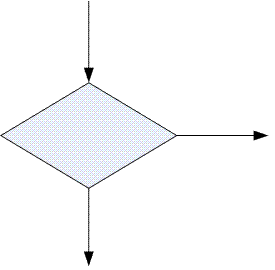
- 1 : ขบวนการประมวลผล
- 2 : อินพุท เอาท์พุท
- 3 : จุดเชื่อมต่อภายในหน้าเดียวกัน
- 4 : การตัดสินใจ
- คำตอบที่ถูกต้อง : 4
ข้อที่ 25 :
- ข้อใดไม่ใช่หน่วยเก็บข้อมูลที่สามารถแก้ไขได้
- 1 : RAM
- 2 : ROM
- 3 : Harddisk
- 4 : CompactFlash
- คำตอบที่ถูกต้อง : 2
ข้อที่ 26 :
- ข้อใดไม่ใช่ส่วนประกอบภายใน CPU ของไมโครคอมพิวเตอร์
- 1 : Cache memory
- 2 : ALU (Arithmetic Logic Unit)
- 3 : Harddisk
- 4 : Program Counter Register (PC)
- คำตอบที่ถูกต้อง : 3
ข้อที่ 27 :
- ระบบปฏิบัติการ (Operating Systems) ตัวใดไม่ได้ถูกพัฒนาสำหรับเครื่องพีซี
- 1 : Unix
- 2 : Linux
- 3 : Windows XP
- 4 : Symbian
- คำตอบที่ถูกต้อง : 4
ข้อที่ 28 :
- จาก pseudocode:
a=0;
for i=1 to 10
a=a+3;
end
show_the_value_of(a);
ผลลัพธ์ที่ได้คืออะไร
- 1 : 0
- 2 : 1
- 3 : 27
- 4 : 30
- คำตอบที่ถูกต้อง : 4
ข้อที่ 29 :
- จาก pseudocode: a=receive_input_from_user();
if a>5 and a<10 then
if a=8 then
a=a+9;
else
a=a+10;
end
else
if a=0 then
a=a-10;
end
end
ถ้า run pseudocode ดังกล่าว 3 ครั้ง โดยกำหนดให้ input จาก user คือ 10, 3, 7 ตามลำดับ ผลลัพธ์ของค่า a ที่ได้ในแต่ละรอบคือ:
- 1 : 0 0 70
- 2 : 18 -7 0
- 3 : 9 10 -3
- 4 : 10 3 17
- คำตอบที่ถูกต้อง : 4
ข้อที่ 30 :
- ข้อใดบรรยายคุณลักษณะของ Random Access Memory (RAM) ที่ใช้ในเครื่องคอมพิวเตอร์ได้เหมาะสมที่สุด
- 1 : ขนาดที่ใช้งานในเครื่องคอมพิวเตอร์ทั่วไปแบบตั้งโต๊ะคือ 40 Gbyte
- 2 : ราคาถูกที่สุดเมื่อเทียบกับราคาของหน่วยความจำชนิดอื่น
- 3 : ความเร็วในการทำงานช้ามากเมื่อเทียบกับการทำงานของหน่วยความจำชนิดอื่น
- 4 : ข้อมูลที่เก็บจะสูญหายเมื่อปิดเครื่อง
- คำตอบที่ถูกต้อง : 4
ข้อที่ 31 :
- ไวรัสคอมพิวเตอร์คืออะไร
- 1 : เชื้อโรคชนิดหนึ่งที่ติดต่อระหว่างผู้ใช้งานทำให้เกิดการเจ็บป่วย ในขณะที่เข้าใช้งานตามร้านอินเตอร์เนตคาเฟ่
- 2 : เชื้อโรคชนิดหนึ่งที่ติดต่อจากเครื่องคอมพิวเตอร์มายังผู้ใช้งาน แต่มีความรุนแรงไม่มาก
- 3 : โปรแกรมคอมพิวเตอร์ที่ถูกพัฒนาขึ้นมาเพื่อใช้การตรวจสอบการทำงานระบบป้องกัน
- 4 : โปรแกรมคอมพิวเตอร์ที่ประสงค์ร้ายต่อข้อมูลและการทำงานของเครื่อง คอมพิวเตอร์ ซึ่งสามารถแพร่กระจายจากเครื่องสู่เครื่อง โดยการใช้งานร่วมกันของไฟล์ หรือโปรแกรมต่าง ๆ
- คำตอบที่ถูกต้อง : 4
ข้อที่ 32 :
- ข้อใดผิด
- 1 : ฮาร์ดแวร์ของคอมพิวเตอร์คือสิ่งที่จับตัองได้ เช่นหน่วยประมวลผล
- 2 : ฮาร์ดดิกส์เป็นฮาร์ดแวร์ชนิดหนึ่ง
- 3 : ฮาร์ดแวร์ที่ขาดไม่ได้คือตัวแปลโปรแกรม
- 4 : หน่วยความจำเป้นฮาร์ดแวร์ที่สำคัญ
- คำตอบที่ถูกต้อง : 3
ข้อที่ 33 :
- ข้อใดไม่ใช่ชื่อ operating systems
- 1 : Windows 2000
- 2 : Windows Office
- 3 : Windows XP
- 4 : Linux
- คำตอบที่ถูกต้อง : 2
ข้อที่ 34 :
- ข้อใดไม่ใช่ชึ่อภาษาคอมพิวเตอร์
- 1 : Intel
- 2 : JAVA
- 3 : Basic
- 4 : C
- คำตอบที่ถูกต้อง : 1
ข้อที่ 35 :
- จงบอกว่าอุปกรณ์ใดต่อไปนี้ เป็นอุปกรณ์ประเภท standard output
- 1 : printer
- 2 : monitor
- 3 : diskette
- 4 : Key board
- คำตอบที่ถูกต้อง : 2
ข้อที่ 36 :
- จงบอกว่าอุปกรณ์ใดต่อไปนี้ เป็นอุปกรณ์ประเภท standard input
- 1 : printer
- 2 : monitor
- 3 : diskette
- 4 : Keyboard
- คำตอบที่ถูกต้อง : 4
ข้อที่ 37 :
- ข้อใดไม่เกี่ยวข้องกับการเขียนโฟลว์ชาร์ต
- 1 : การระบุส่วน start/end ของโปรแกรม
- 2 : การระบุเงื่อนไขการทำงานต่างๆของโปรแกรม
- 3 : การระบุภาษาที่จะใช้เขียนโปรแกรม
- 4 : การระบุตัวแปรที่จะใช้ในการคำนวณ
- คำตอบที่ถูกต้อง : 3
ข้อที่ 38 :
- ข้อใดไม่ใช่ตัวอย่างของอุปกรณ์ input
- 1 : Keyboard
- 2 : Mouse
- 3 : Monitor
- 4 : Scanner
- คำตอบที่ถูกต้อง : 3
ข้อที่ 39 :
- ค่าเลขฐาน 16 ต่อไปนี้ คือ 123 จะมีค่าเท่ากับเลขฐานสองเท่าใด
- 1 : 0010 0010 0011
- 2 : 0001 0001 0010
- 3 : 0010 0010 0010
- 4 : 0001 0010 0011
- คำตอบที่ถูกต้อง : 4
ข้อที่ 40 :
- อุปกรณ์ใดไม่สามารถนำมาใช้เป็นหน่วยความจำหลัก(main memory)ของคอมพิวเตอร์
- 1 : RAM
- 2 : ROM
- 3 : PROM
- 4 : Flash Memory
- คำตอบที่ถูกต้อง : 4
ข้อที่ 41 :
- คอมพิวเตอร์ 32 บิต คือ คอมพิวเตอร์ที่มี
- 1 : หน่วยความจำขนาด 32 บิต
- 2 : บัสข้อมูล(data bus) ขนาด 32 บิต
- 3 : บัสแอดเดรส(address bus) ขนาด 32 บิต
- 4 : รีจิสเตอร์(register) ขนาด 32 บิต
- คำตอบที่ถูกต้อง : 4
ข้อที่ 42 :
- การนำคอมพิวเตอร์ไปใช้ในการประมวลผลในข้อใดไม่น่าเป็นไปได้
- 1 : คำนวณหาค่าสูงสุดของการรับน้ำหนักของสะพาน
- 2 : หาระยะทางที่สั้นทีสุดจากเมืองหนึ่งไปยังอีกเมืองหนึ่ง
- 3 : พยากรณ์อากาศ
- 4 : พยากรณ์การเกิดแผ่นดินไหว
- คำตอบที่ถูกต้อง : 4
ข้อที่ 43 :
- พอร์ตอนุกรมแตกต่างจากพอร์ตขนานอย่างไร
- 1 : พอร์ตอนุกรมสามารถรับส่งข้อมูลได้ แต่พอร์ตขนานส่งข้อมูลได้อย่างเดียว
- 2 : พอร์ตอนุกรม ส่งข้อมูลเรียงกันไปทีละบิตบนสายหนึ่งเส้น พอร์ตขนาน ส่งข้อมูลในแต่ละบิตออกไปพร้อมๆ กันบนสายหลายๆ เส้น
- 3 : พอร์ตอนุกรม ส่งข้อมูลโดยผ่านระบบปฏิบัติการ พอร์ตขนาน สามารถเขียนโปรแกรมติดต่อได้โดยตรง
- 4 : พอร์ตอนุกรม ส่งข้อมูลได้คราวละหนึ่งไบต์ พอร์ตขนานส่งข้อมูลได้คราวละหลายๆ ไบต์
- 5 :
- คำตอบที่ถูกต้อง : 2
ข้อที่ 44 :
- MO (Magneto-Optical) disk เป็นหน่วยความจำที่มีพื้นฐานบนเทคโนโลยีใด
- 1 : เทคโนโลยีสารกึ่งตัวนำ
- 2 : เทคโนโลยีแสง
- 3 : เทคโนโลยีแม่เหล็ก
- 4 : ข้อ ข. และค. รวมกันเป็นคำตอบที่ถูกต้อง
- คำตอบที่ถูกต้อง : 4
ข้อที่ 45 :
- Unicode คืออะไร
- 1 : มาตรฐานชุดคำสั่งที่ใช้ในซีพียู
- 2 : มาตรฐานรหัสแทนข้อมูลที่ใช้ในการเก็บและคำนวณของคอมพิวเตอร์
- 3 : มาตรฐานอุตสาหกรรมสำหรับการออกแบบโปรแกรมคอมพิวเตอร์
- 4 : มาตรฐานรหัสใช้ในการแสดงตัวอักษรหรือข้อความ
- คำตอบที่ถูกต้อง : 4
ข้อที่ 46 :
- ข้อใด ไม่ใช่ องค์ประกอบของระบบคอมพิวเตอร์
- 1 : ฮาร์ดแวร์ ชิ้นส่วนต่างๆ ที่ประกอบกันเป็นตัวเครื่อง
- 2 : ซอฟต์แวร์ โปรแกรมต่างๆ ที่จะให้คอมพิวเตอร์ทำงาน
- 3 : ข้อมูล ตัวเลขต่างๆ ที่เก็บอยู่ภายในเครื่อง
- 4 : สมชายที่ต้องใช้คอมพิวเตอร์เก็บข้อมูลสัตว์ในฟาร์ม
- คำตอบที่ถูกต้อง : 4
ข้อที่ 47 :
- ข้อใดจัดเป็นหน่วยความจำหลักในระบบคอมพิวเตอร์
- 1 : RAM
- 2 : CD-ROM
- 3 : Floppy Disk
- 4 : Hard Disk
- คำตอบที่ถูกต้อง : 1
ข้อที่ 48 :
- หากต้องการให้ประสิทธิภาพของการทำงานของไดร์ฟมีประสิทธิภาพที่สูง คำกล่าวในข้อใดถูกต้องที่สุด
- 1 : จะต้องมีความเร็วเฉลี่ยในการเข้าถึงข้อมูลที่สูง และ ความเร็วในการถ่ายโอนข้อมูลที่ต่ำ
- 2 : จะต้องมีความเร็วเฉลี่ยในการเข้าถึงข้อมูลที่สูง และ ความเร็วในการถ่ายโอนข้อมูลที่สูง
- 3 : จะต้องมีความเร็วเฉลี่ยในการเข้าถึงข้อมูลที่ต่ำ และ ความเร็วในการถ่ายโอนข้อมูลที่สูง
- 4 : จะต้องมีความเร็วเฉลี่ยในการเข้าถึงข้อมูลที่ต่ำและ ความเร็วในการถ่ายโอนข้อมูลที่ต่ำ
- คำตอบที่ถูกต้อง : 3
ข้อที่ 49 :
- พื้นที่ที่เล็กที่สุดในการอ่าน หรือ เขียนข้อมูลลงไปในแผ่นดิสก์ หรือ ฮาร์ดดิสก์เรียกว่าอะไร
- 1 : ไบต์ (Byte)
- 2 : บิต (Bit)
- 3 : เซกเตอร์(Sector)
- 4 : แทร็ก (Track)
- คำตอบที่ถูกต้อง : 3
ข้อที่ 50 :
- เวลาในการเคลื่อนที่ของหัวอ่านไปยังตำแหน่งที่ต้องการอ่านเขียนข้อมูล เรียกว่า
- 1 : Header Move Time
- 2 : Maximum Move Time
- 3 : Minimum Access Time
- 4 : Maximum Access Time
- คำตอบที่ถูกต้อง : 4
ข้อที่ 51 :
- ความสามารถของระบบปฏิบัติการที่สามารถใช้งานโปรแกรมหลายๆ ตัวพร้อมกันได้เรียกว่า
- 1 : Multitasking
- 2 : Object Linking
- 3 : Object Embedding
- 4 : Multi User
- คำตอบที่ถูกต้อง : 1
ข้อที่ 52 :
- ข้อใดกล่าวถึงคำว่า Hierarchical File System ได้ถูกต้องที่สุด
- 1 : การเก็บรวบรวมข้อมูลว่าโปรแกรมใดใช้อุปกรณ์ตัวใดอยู่
- 2 : โครงสร้างการทำเมนูเพื่อใช้งานในโปรแกรมต่างๆ
- 3 : ระบบที่ใช้สำหรับการใช้ข้อมูลร่วมกันในโปรแกรมต่างๆ
- 4 : โครงสร้างการจัดเก็บไฟล์ข้อมูลที่มีโครงสร้างแบบระดับชั้น
- คำตอบที่ถูกต้อง : 4
ข้อที่ 53 :
- แป้นพิมพ์กลุ่มใดใช้สร้างคำสั่งลัดในการสั่งงานคอมพิวเตอร์
- 1 : คีย์อักขระ
- 2 : คีย์ตัวเลข
- 3 : คีย์ฟังก์ชั่น
- 4 : คีย์เคลื่อนย้ายตัวอักษร
- คำตอบที่ถูกต้อง : 3
ข้อที่ 54 :
- หน่วยวัดความละเอียดในการพิมพ์ของเครื่องพิมพ์มีหน่วยเป็น
- 1 : Dot Pitch
- 2 : PPM
- 3 : DPI
- 4 : bps
- คำตอบที่ถูกต้อง : 3
ข้อที่ 55 :
- พอร์ท(Port)ชนิดใดของคอมพิวเตอร์สามารถรองรับการเชื่อมต่อแบบPnP(Plug and Play)
- 1 : COM1
- 2 : COM2
- 3 : USB
- 4 : ISA
- คำตอบที่ถูกต้อง : 3
ข้อที่ 56 :
- หน่วยใดไม่ใช่หน่วยวัดการทำงานของคอมพิวเตอร์
- 1 : MIPS
- 2 : MFLOPS
- 3 : VUP
- 4 : IPS
- คำตอบที่ถูกต้อง : 4
ข้อที่ 57 :
- หน่วยของข้อมูลในคอมพิวเตอร์ที่เล็กที่สุดคืออะไร?
- 1 : Bit
- 2 : Byte
- 3 : Field
- 4 : Record
- คำตอบที่ถูกต้อง : 1
ข้อที่ 58 :
- มาตรฐานรหัสใดที่นิยมใช้กันมากในปัจจุบัน
- 1 : EBCDIC
- 2 : ASCII
- 3 : BCD
- 4 : UCB
- คำตอบที่ถูกต้อง : 2
ข้อที่ 59 :
- อุปกรณ์ใดต่อไปนี้มีการจัดเก็บและเข้าถึงข้อมูลแบบลำดับ
- 1 : Floppy Disk
- 2 : Hard Disk
- 3 : CDROM
- 4 : Tape
- คำตอบที่ถูกต้อง : 4
ข้อที่ 60 :
- ระบบเครือข่ายใดมีขนาดใหญ่ที่สุด
- 1 : MAN
- 2 : LAN
- 3 : WAN
- 4 : ไม่มีข้อถูก
- คำตอบที่ถูกต้อง : 3
ข้อที่ 61 :
- ความหมายของคำว่าขั้นตอนวิธี (Algorithm) คือข้อใด
- 1 : การทำความเข้าใจกับปัญหาที่เกิดขึ้น
- 2 : การหาวิธีแก้ปัญหา
- 3 : การอธิบายลำดับขั้นตอนการทำงานเป็นข้อๆตั้งแต่ขั้นตอนแรกถึงขั้นตอนสุดท้าย
- 4 : การทดสอบวิธีแก้ปัญหา
- คำตอบที่ถูกต้อง : 3
ข้อที่ 62 :
- เมื่อเปรียบเทียบกับร่างกายมนุษย์ ส่วนใดของคอมพิวเตอร์ที่ทำหน้าที่เปรียบเทียบได้กับการทำงานของสมอง
- 1 : CPU + RAM
- 2 : CPU + Harddisk
- 3 : RAM + Harddisk
- 4 : OS + RAM
- คำตอบที่ถูกต้อง : 1
ข้อที่ 63 :
- อุปกรณ์ชิ้นใดที่สามารถทำหน้าที่เป็นได้ทั้ง Input และ Output
- 1 : Keyboard, Scanner
- 2 : Printer, Floppy Disk
- 3 : Harddisk, Touch Screen
- 4 : Touch Pad, Monitor
- คำตอบที่ถูกต้อง : 4
ข้อที่ 64 :
- ข้อใดไม่ใช่ OS (ระบบปฏิบัติการของคอมพิวเตอร์)
- 1 : Opera
- 2 : Linux
- 3 : DOS
- 4 : Unix
- คำตอบที่ถูกต้อง : 1
ข้อที่ 65 :
- คอมพิวเตอร์ตั้งโต๊ะจัดเป็นคอมพิวเตอร์ประเภทใด
- 1 : Mini Computer
- 2 : Super Computer
- 3 : Micro Computer
- 4 : Analog Computer
- คำตอบที่ถูกต้อง : 3
ข้อที่ 66 :
- Hard Disk จัดเป็นหน่วยความจำประเภทใด
- 1 : หน่วยความจำหลัก
- 2 : หน่วยความจำสำรอง
- 3 : หน่วยความจำถาวร
- 4 : หน่วยความจำชั่วคราว
- คำตอบที่ถูกต้อง : 2
ข้อที่ 67 :
- ข้อใดคือรูปแบบข้อข้อมูลที่สามารถนำเข้าสู่ระบบสารสนเทศ
- 1 : ภาพนิ่ง
- 2 : ภาพเคลื่อนไหว
- 3 : เสียง
- 4 : ถูกทุกข้อ
- คำตอบที่ถูกต้อง : 4
ข้อที่ 68 :
- ข้อใดกล่าวผิดเกี่ยวกับ Pseudo code และ flow chart
- 1 : Pseudo code และ flow chart ถูกสร้างขึ้นเพื่อจัดรูปแบบความคิดในการเขียนโปรแกรมให้เป็นระบบ
- 2 : Pseudo code จำเป็นจะต้องถูกแปลงเป็น flow chart ก่อนเป็นคำสั่งของโปรแกรมคอมพิวเตอร์
- 3 : การเขียน Flow chart จะเน้นการใช้สัญลักษณ์เพื่อให้อ่านเข้าใจได้
- 4 : ผิดทุกข้อ
- คำตอบที่ถูกต้อง : 2
ข้อที่ 69 :
- ข้อใดไม่ใช่หน้าที่ของ OS (Operating System)
- 1 : แบ่งปันทรัพยากรและเนื้อหาในหน่วยความจำให้แต่ละโปรแกรม
- 2 : โหลดโปรแกรมขึ้นมาทำงาน
- 3 : อ่านและเขียนข้อมูลจากไฟล์
- 4 : ใช้ประสานงานการติดต่อกับผู้ใช้งาน
- คำตอบที่ถูกต้อง : 4
ข้อที่ 70 :
- เครือข่ายอินเตอร์เน็ตใช้ครั้งแรกที่ประเทศใด
- 1 : อังกฤษ
- 2 : ไทย
- 3 : ญี่ปุ่น
- 4 : สหรัฐอเมริกา
- คำตอบที่ถูกต้อง : 4
ข้อที่ 71 :
- คอมพิวเตอร์มีบทบาทกับการศึกษาอย่างไร
- 1 : นำมาประยุกต์ใช้ในกิจกรรมการเรียนการสอน เช่น ทำสื่อต่างๆ
- 2 : จัดทำประวัตินักเรียน ประวัติครูอาจารย์
- 3 : ใช้เป็นแหล่งเรียนรู้ เช่นการค้นคว้าจากอินเทอร์เน็ต
- 4 : ถูกทุกข้อ
- คำตอบที่ถูกต้อง : 4
ข้อที่ 72 :
- หน่วยใดมีลักษณะการทำงานคล้ายกับสมองของมนุษย์
- 1 : หน่วยประมวลผล
- 2 : หน่วยรับข้อมูล
- 3 : หน่วยความจำ
- 4 : หน่วยแสดงผล
- คำตอบที่ถูกต้อง : 1
ข้อที่ 73 :
- คอมพิวเตอร์ยุคใด ใช้วงจรไอซี (Integrated Circuit) เป็นหลัก
- 1 : คอมพิวเตอร์ยุคแรก
- 2 : คอมพิวเตอร์ยุคที่ 2
- 3 : คอมพิวเตอร์ยุคที่ 3
- 4 : คอมพิวเตอร์ยุคในยุคปัจจุบัน
- คำตอบที่ถูกต้อง : 3
ข้อที่ 74 :
- ข้อใดเป็นอุปกรณ์รับข้อมูลเบื้องต้น
- 1 : จอภาพ
- 2 : คีย์บอร์ด
- 3 : เครื่องพิมพ์
- 4 : กล่องใส่ดิสก์
- คำตอบที่ถูกต้อง : 2
ข้อที่ 75 :
- อุปกรณ์ที่ช่วยในการสำรองไฟฟ้าเวลาไฟดับหรือไฟตก เรียกว่าอะไร
- 1 : Power Supply
- 2 : Monitor
- 3 : UPS
- 4 : Case
- คำตอบที่ถูกต้อง : 3
ข้อที่ 76 :
- หน่วยความจำในข้อใด มีความจุมากที่สุด
- 1 : SDRAM
- 2 : Hard Disk
- 3 : CD-ROM Disk
- 4 : Floppy Disk
- คำตอบที่ถูกต้อง : 2
ข้อที่ 77 :
- อุปกรณ์ในข้อใด ถือว่าเป็นอุปกรณ์ต่อพ่วง
- 1 : เมาส์
- 2 : คีย์บอร์ด
- 3 : เครื่องพิมพ์
- 4 : สายไฟ
- คำตอบที่ถูกต้อง : 3
ข้อที่ 78 :
- ชุดคำสั่งหรือโปรแกรมที่ใช้สั่งงานให้คอมพิวเตอร์ทำงาน เรียกว่าอะไร
- 1 : ซอฟต์แวร์
- 2 : ฮาร์ดแวร์
- 3 : พีเพิลแวร์
- 4 : ระเบียบวิธีปฏิบัติ
- คำตอบที่ถูกต้อง : 1
ข้อที่ 79 :
- ผลลัพธ์ของนิพจน์ 1 + 4 / 2 คือข้อใด
- 1 : 2.5
- 2 : 3
- 3 : 2
- 4 : 3.5
- คำตอบที่ถูกต้อง : 2
ข้อที่ 80 :
- จงหาคำตอบของ 2 + 3 * 4 - 1
- 1 : 11
- 2 : 13
- 3 : 15
- 4 : 19
- คำตอบที่ถูกต้อง : 2
ข้อที่ 81 :
- ในการเขียนโปรแกรมเพื่อใช้ในการหาระยะขจัดของวัตถุที่ตกลงสู่พื้นจากสูตร s = 0.5 * g * t^2 ควรมีการสร้างค่าคงที่กี่ตัวในโปรแกรม
- 1 : 1
- 2 : 2
- 3 : 3
- 4 : 4
- คำตอบที่ถูกต้อง : 3
ข้อที่ 82 :
- ถ้า ในมหาวิทยาลัยกำหนดให้นักศึกษาเรียนได้ไม่เกิน 8 ปี ในการเขียนโปรแกรมเพื่อทำการหาค่าเฉลี่ยของจำนวนนักศึกษาในแต่ละชั้นปี(โดย เขียนให้สั้นที่สุดและใช้ตัวแปรและค่าคงที่น้อยที่สุด) จะต้องใช้ตัวแปรและค่าคงที่ประเภทใดบ้าง ประเภทละกี่ตัวจึงจะเหมาะสมที่สุด
- 1 : Integer 2 ตัว, Real 1 ตัว, ค่าคงที่ 1 ตัว
- 2 : Integer 1 ตัว, Real 2 ตัว, ค่าคงที่ 1 ตัว
- 3 : Integer 2 ตัว, Real 2 ตัว, ค่าคงที่ 2 ตัว
- 4 : Integer 1 ตัว, Real 1 ตัว, ค่าคงที่ 2 ตัว
- คำตอบที่ถูกต้อง : 1
ข้อที่ 83 :
- Assignment Statement ใช้ในการทำอะไร
- 1 : กำหนดค่าให้กับตัวแปร
- 2 : เปรียบเทียบค่าของ expression
- 3 : สร้าง Array
- 4 : วนลูป
- คำตอบที่ถูกต้อง : 1
ข้อที่ 84 :
- Tool ตัวใดที่ช่วยในการลดขนาดของแฟ้มข้อมูล
- 1 : WinRAR
- 2 : Oracle
- 3 : Apache
- 4 : WinAmp
- คำตอบที่ถูกต้อง : 1
ข้อที่ 85 :
- ถ้า เครื่องคอมพิวเตอร์ของท่านทำงานช้าลงอย่างมากเมื่อเปรียบเทียบกับการทำงาน ของเครื่องเมื่อเพิ่งซื้อมาใหม่ ท่านคิดว่าควรใช้ Tool ใดในการแก้ไขปัญหานี้
- 1 : Norton SystemWork
- 2 : McAfee Internet Security
- 3 : MS Office Tools
- 4 : Adobe Acrobat
- คำตอบที่ถูกต้อง : 1
ข้อที่ 86 :
- ข้อใดคือมาตรฐานของระบบเครือข่ายท้องถิ่นที่นิยมใช้กันมากที่สุดในปัจจุบัน
- 1 : IEEE 802.3
- 2 : IEEE 802.4
- 3 : IEEE 802.5
- 4 : IEEE 802.6
- คำตอบที่ถูกต้อง : 1
ข้อที่ 87 :
- คอมพิวเตอร์ไม่เหมาะกับงานประเภทใด
- 1 : งานที่ต้องการความถูกต้องสูง
- 2 : งานที่มีปริมาณมาก
- 3 : งานที่ต้องการความรวดเร็วมาก
- 4 : งานที่มีเงื่อนไขการตัดสินใจไม่แน่นอน
- คำตอบที่ถูกต้อง : 4
ข้อที่ 88 :
- หน่วยวัดความจุใด มีค่าเท่ากับ 1024 Byte
- 1 : Megabyte
- 2 : Kilobyte
- 3 : Gigabyte
- 4 : Terabyte
- คำตอบที่ถูกต้อง : 2
ข้อที่ 89 :
- สมาชิกที่เล็กที่สุด หรือค่าที่น้อยที่สุด ซึ่งแทนได้เพียงค่าศูนย์ หรือค่าหนึ่งเท่านั้น เรียกว่า
- 1 : Bit
- 2 : Byte
- 3 : Word
- 4 : Character
- คำตอบที่ถูกต้อง : 1
ข้อที่ 90 :
- ภาษาสั่งงานใดที่คล้ายภาษาเครื่องมากที่สุด
- 1 : Fortran Language
- 2 : NGV Language
- 3 : Cobol Language
- 4 : Assembly Language
- คำตอบที่ถูกต้อง : 4
ข้อที่ 91 :
- ข้อใดเป็นขั้นตอนการเขียนโปรแกรมที่ถูกต้องที่สุด
- 1 : การทดสอบโปรแกรม, การเขียนโปรแกรม, การเขียนผังงาน, การวิเคราะห์งาน
- 2 : การเขียนโปรแกรม, การทดสอบโปรแกรม, การวิเคราะห์งาน, การเขียนผังงาน
- 3 : การวิเคราะห์งาน, การเขียนผังงาน, การเขียนโปรแกรม, การทดสอบโปรแกรม
- 4 : การวิเคราะห์งาน, การเขียนโปรแกรม, การเขียนผังงาน, การทดสอบโปรแกรม
- คำตอบที่ถูกต้อง : 3
ข้อที่ 92 :
- คอมพิวเตอร์สามารถรับรู้คำพูดของมนุษย์ โดยไม่คำนึงว่าใครเป็นผู้พูดเราเรียกว่า
- 1 : Voice Computer
- 2 : Voice Technology
- 3 : Special Computer
- 4 : Voice Recognition
- คำตอบที่ถูกต้อง : 4
ข้อที่ 93 :
- ข้อใดเป็นภาษาคอมพิวเตอร์
- 1 : BASIC , POWERPOINT
- 2 : BASIC , COBOL
- 3 : COBOL , EXCEL
- 4 : COBOL , POWERPOINT
- คำตอบที่ถูกต้อง : 2
ข้อที่ 94 :
- การบริการโอนย้ายข้อมูลได้แก่บริการใด
- 1 : FTP
- 2 : IBM
- 3 : PPP
- 4 : GPD
- คำตอบที่ถูกต้อง : 1
เนื้อหาวิชา : 2 : ชนิดของข้อมูล
ข้อที่ 95 :
- ถ้าต้องการเก็บข้อมูลค่าตัวเลข 7.82 ต้องใช้ตัวแปรประเภทใด
- 1 : integer
- 2 : char
- 3 : float
- 4 : bit
- คำตอบที่ถูกต้อง : 3
ข้อที่ 96 :
- ผลลัพธ์ของการกระทำ int * float จะให้ผลลัพธ์ เป็นชนิดข้อมูลแบบใด
- 1 : char
- 2 : int
- 3 : float
- 4 : double
- 5 : ไม่มีข้อถูก
- คำตอบที่ถูกต้อง : 3
ข้อที่ 97 :
- ถ้าข้อมูลมีค่า 3.54 ถ้าเก็บค่าในตัวแปร int จะให้ค่าผลลัพธ์เป็นอย่างไร
- 1 : 3.54
- 2 : 3.5
- 3 : 3
- 4 : 0
- คำตอบที่ถูกต้อง : 3
ข้อที่ 98 :
- ข้อใดต่อไปนี้ถูกต้อง
- 1 : 4 bits = 1 byte
- 2 : 8 bits = 1 byte
- 3 : 1000 bytes = 1 kilobyte (KB)
- 4 : 1000 KB = 1 megabyte (MB)
- คำตอบที่ถูกต้อง : 2
ข้อที่ 99 :
- 16.07 ควรกำหนดเป็นข้อมูลชนิดใด
- 1 : อักขระ
- 2 : ข้อความ
- 3 : จำนวนเต็ม
- 4 : จำนวนทศนิยม
- คำตอบที่ถูกต้อง : 4
ข้อที่ 100 :
- ช้อมูลชนิดตัวอักษร 1 ตัว มีความกว้างกี่บิต
- 1 : 7 บิต
- 2 : 8 บิต
- 3 : 9 บิต
- 4 : 16 บิต
- คำตอบที่ถูกต้อง : 2
ข้อที่ 101 :
- ผลจากการทำงานของโปรแกรม ค่า x, y, z มีค่าเท่ากับเท่าไหร่
int x = 8;
double y = 3;
int z = 2;
x++;
y = y / z;
z = (int)y;
x - 1;
- 1 : x=9 y=1 z=2
- 2 : x=9 y=1.5 z=1
- 3 : x=8 y=1 z=2
- 4 : x=8 y=1.5 z=1
- คำตอบที่ถูกต้อง : 2
ข้อที่ 102 :
- ถ้าเราต้องการเก็บค่าของเลขจำนวนเต็มบวกซึ่งมีค่าตั้งแต่ 1 ถึง 32767 เก็บไว้ที่ตัวแปร n เราควรกำหนดอย่างไร?
- 1 : int n;
- 2 : signed int n;
- 3 : unsigned int n;
- 4 : unsigned char n;
- คำตอบที่ถูกต้อง : 3
ข้อที่ 103 :
- การประกาศตัวแปรต่อไปนี้ ข้อใดใช้เนื้อที่ในหน่วยความจำมากที่สุด?
- 1 : char str[13] = California;
- 2 : char grade, school[ ] = SUT KORAT;
- 3 : int x, y, z[5];
- 4 : float average, gpa, mean;
- คำตอบที่ถูกต้อง : 3
ข้อที่ 104 :
- กำหนดให้ char ch = A; ผลของการใช้คำสั่ง printf ในข้อใดกล่าวถูก? (รหัส ASCII ของ A = 65)
- 1 : printf(%c %c, ch, 65); ผลที่แสดงออกที่จอภาพคือ A 65
- 2 : printf(%d %c, ch, 65); ผลที่แสดงออกที่จอภาพคือ A 65
- 3 : printf(%c %d, 65, 65); ผลที่แสดงออกที่จอภาพคือ A A
- 4 : printf(%d %d, 65, ch); ผลที่แสดงออกที่จอภาพคือ 65 65
- คำตอบที่ถูกต้อง : 4
ข้อที่ 105 :
- ในการประกาศตัวแปร char str[ ] = I love \ABC\.;
str จะถูกกำหนดขนาดในหน่วยความจำเท่าไร?
- 1 : 12 bytes
- 2 : 13 bytes
- 3 : 14 bytes
- 4 : 15 bytes
- คำตอบที่ถูกต้อง : 3
ข้อที่ 106 :
- ชื่อตัวแปรใดต่อไปนี้ไม่สามารถนำไปใช้ในการประกาศตัวแปรในภาษาโปรแกรมทั่ว ๆ ไปได้
- 1 : report_99
- 2 : food
- 3 : general
- 4 : 7sumurai
- คำตอบที่ถูกต้อง : 4
ข้อที่ 107 :
- ถ้าต้องการให้ตัวแปร x เก็บค่า -123456
จะต้องประกาศให้ตัวแปร x เป็นชนิดอะไร
- 1 : unsigned long
- 2 : int
- 3 : unsigned int
- 4 : long
- คำตอบที่ถูกต้อง : 4
ข้อที่ 108 :
- ต้องประกาศตัวแปรเป็นชนิดอะไร
จึงจะเก็บค่า 12345 ได้อย่างประหยัดหน่วยความจำที่สุด
- 1 : double
- 2 : int
- 3 : long
- 4 : float
- คำตอบที่ถูกต้อง : 2
ข้อที่ 109 :
- ข้อใดคือความหมายของตัวแปรท้องถิ่น (Local Variable) และตัวแปรภายนอก (Global Variable)
- 1 : Local Variable คือตัวแปรที่กำหนดภายในฟังก์ชันหรือลูปของโปรแกรม Global Variable คือตัวแปรที่กำหนดภายนอกโปรแกรมหลัก
- 2 : Local Variable คือตัวแปรที่มองเห็นเฉพาะในฟังก์ชันหรือในลูปโปรแกรม Global Variable คือตัวแปรที่สามารถมองเห็นได้ทุกแห่งในโปรแกรม
- 3 : Local Variable คือตัวแปรที่เปลี่ยนแปลงค่าได้ Global Variable คือตัวแปรที่ไม่สามารถเปลี่ยนแปลงค่าได้
- 4 : ถูกเฉพาะข้อ 1 และ 2
- คำตอบที่ถูกต้อง : 4
ข้อที่ 110 :
- คอมพิวเตอร์จัดเก็บข้อมูลทุกชนิดในรูปแบบใด
- 1 : เลขฐานสอง
- 2 : เลขฐานสิบหก
- 3 : เลขฐานสิบ
- 4 : เลขฐานสิบแปด
- คำตอบที่ถูกต้อง : 1
ข้อที่ 111 :
- เราควรระบุชนิดของตัวแปรให้สอดคล้องกับช่วงการเก็บข้อมูลที่เป็นไปได้ เหตุผลข้อใดสำคัญที่สุด
- 1 : เพื่อความรวดเร็วในการคำนวณ
- 2 : เพื่อให้สามารถเก็บข้อมูลทุกตัวได้ถูกต้อง
- 3 : เพื่อรักษาความปลอดภัยของข้อมูล
- 4 : เพื่อให้หน่วยประมวลผลทำงานง่ายขึ้น
- คำตอบที่ถูกต้อง : 2
ข้อที่ 112 :
- ในการเก็บค่าเลขจำนวนเต็มด้วยวิธี Sign-Magnitude จะต้องใช้เนื้อที่กี่บิตในการเก็บค่า Magnitude ของเวิร์ดที่มี n บิต
- 1 : n-1 บิต
- 2 : n-2 บิต
- 3 : n บิต
- 4 : n+1 บิต
- คำตอบที่ถูกต้อง : 1
ข้อที่ 113 :
- int ใช้ระบุถึงตัวแปรประเภทใด
- 1 : ตัวอักขระ
- 2 : ชุดข้อความ
- 3 : ตัวเลขจำนวนเต็ม
- 4 : เลขฐาน 16
- คำตอบที่ถูกต้อง : 3
ข้อที่ 114 :
- float ใช้ระบุชนิดตัวแปรประเภทใด
- 1 : เลขฐาน 16
- 2 : ชุดข้อความ
- 3 : ตัวเลขจำนวนเต็ม
- 4 : ตัวเลขจำนวนจริง
- คำตอบที่ถูกต้อง : 4
ข้อที่ 115 :
- จงแปลงเลข 4286 เป็นเลขฐานสอง
- 1 : 01100010001110
- 2 : 01100101001110
- 3 : 01000110110110
- 4 : 01000010111110
- คำตอบที่ถูกต้อง : 4
ข้อที่ 116 :
- ในการเขียนโปรแกรมภาษา C,C++ คำตอบข้อใดเป็นข้อมูลของเลขฐาน 16
- 1 : 120X
- 2 : 0X14
- 3 : 013
- 4 : 31H
- คำตอบที่ถูกต้อง : 2
ข้อที่ 117 :
- ข้อมูลในลักษณะใดที่ถูกต้องที่สุดต่อไปนี้เป็นข้อมูลที่เรียกว่า อะเรย์
- 1 : เป็นข้อมูลเลขจำนวนจริง
- 2 : เป็นข้อมูลเลขจำนวนเต็ม
- 3 : เป็นข้อมูลชนิดข้อความ
- 4 : เป็นข้อมูลชนิดเดียวกันหลายข้อมูลที่ใช้ชื่อตัวแปรตัวเดียวกัน
- 5 : เป็นข้อมูลที่ไม่สามารถนำมาคำนวณได้
- คำตอบที่ถูกต้อง : 4
ข้อที่ 118 :
- การประกาศค่าตัวแปรในการเขียนโปรแกรมภาษา c,c++ ที่เก็บข้อมูลของเลขฐาน 8 และฐาน 16 จะประกาศเป็นตัวแปรชนิด
- 1 : float
- 2 : double
- 3 : int
- 4 : long double
- คำตอบที่ถูกต้อง : 3
ข้อที่ 119 :
- ตัวแปรชนิดใดที่ใช้พื้นที่หน่วยความจำน้อยที่สุด
- 1 : char
- 2 : int
- 3 : float
- 4 : double
- คำตอบที่ถูกต้อง : 1
ข้อที่ 120 :
- ตัวแปรชนิดใดที่ใช้พื้นที่ในหน่วยความจำขนาด 4 bytes
- 1 : char
- 2 : ussigned char
- 3 : int
- 4 : float
- คำตอบที่ถูกต้อง : 4
ข้อที่ 121 :
- ข้อใดถือว่าถูกต้องในการตังชื่อตัวแปร
- 1 : @@AA
- 2 : #aa
- 3 : !aa
- 4 : aa_
- คำตอบที่ถูกต้อง : 4
ข้อที่ 122 :
- ข้อใดเป็นคำตอบที่ถูกต้องสำหรับการกำหนดค่าตัวแปร
- 1 : char[2] name ="abcde";
- 2 : char{2} name = "abcde";
- 3 : char[6] name ="abcde";
- 4 : char{6} name = "abcde";
- คำตอบที่ถูกต้อง : 3
ข้อที่ 123 :
- รหัสบังคับการพิมพ์ใดในโปรแกรมภาษา C ที่ใช้สำหรับการพิมพ์เลขจำนวนเต็มที่ไม่มีเครื่องหมาย
- 1 : %c
- 2 : %e
- 3 : %f
- 4 : %u
- คำตอบที่ถูกต้อง : 4
ข้อที่ 124 :
- คำสั่งในภาษา C,C++ ที่ใช้สำหรับบังคับการพิมพ์ให้ทำการเลื่อนแท็บในแนวตั้ง
- 1 : \n
- 2 : \t
- 3 : \v
- 4 : \r
- คำตอบที่ถูกต้อง : 3
ข้อที่ 125 :
- x เป็นข้อมูลชนิด Real
y เป็นข้อมูลชนิด Integer
คำสั่งข้อใดที่ไม่สามารถใช้งานได้ เนื่องจากเกิดข้อผิดพลาดในการ compile หรือ run โปรแกรม
- 1 : x + y
- 2 : x mod y
- 3 : x * y
- 4 : x / y
- คำตอบที่ถูกต้อง : 2
ข้อที่ 126 :
- ตัวแปร X ในข้อใดสามารถกำหนดชนิดตัวแปรประเภท int
- 1 : x = 3000000000
- 2 : X = 35.01
- 3 : x = 300 + 20*3
- 4 : x = 3.1416 * 2
- คำตอบที่ถูกต้อง : 3
ข้อที่ 127 :
- ตัวแปรชนิดใดเหมาะสมที่สุด สำหรับเก็บค่าเฉลี่ย
- 1 : integer
- 2 : character
- 3 : string
- 4 : float
- คำตอบที่ถูกต้อง : 4
ข้อที่ 128 :
- ต้องการประกาศตัวแปรเพื่อเก็บข้อมูลชนิดตัวอักขระตัวเดียวควรประกาศตัวแปรเป็นชนิดข้อมูลใดต่อไปนี้
- 1 : char
- 2 : string
- 3 : real
- 4 : integer
- คำตอบที่ถูกต้อง : 1
ข้อที่ 129 :
- ถ้าให้
a=5
b=3
c=true
d=(a>b) xor c
d มีเท่ากับข้อใด
- 1 : a>b
- 2 : a<>b
- 3 : not c
- 4 : ถูกทั้งคำตอบที่ 1 และ 2
- คำตอบที่ถูกต้อง : 3
ข้อที่ 130 :
- จาก
program Q3 เป็นการแปลงอุณหภูมิ จาก °C (ตั้งแต่ 0°C ถึง
100°C) เป็น °F เมื่อต้องการทำให้โปรแกรมนี้สมบูรณ์
บรรทัดที่ 6 ควรเติมอะไร
program Q3 1 Program Q3; 2 uses wincrt; 3 var i:integer; 4 c, f: real; 5 6 Procedure CalF(....................., b: real); 7 begin 8 a:= (b*9/5)+32; 9 end; 10 Begin 11 writeln('C to F'); 12 for i:= 0 to 100 do 13 begin 14 c:= .............; 15 ........................; 16 writeln(C:5:1, F:8:1); 17 end; 18 end.
- 1 : a: integer
- 2 : a: real
- 3 : var a: integer
- 4 : var a:real
- คำตอบที่ถูกต้อง : 4
ข้อที่ 131 :
- หากกำหนดตัวแปรดังนี้ x,y เป็นชนิดจำนวนเต็ม z เป็นชนิดจำนวนจริง c เป็นชนิดอักขระ ข้อใดเป็นนิพจน์(expression)ที่ไม่ถูกต้อง
- 1 : x+y/z
- 2 : -z
- 3 : x*x*y
- 4 : z+c
- คำตอบที่ถูกต้อง : 4
ข้อที่ 132 :
- ถ้าท่านต้องเขียนโปรแกรมเพื่อหาผลคูณของเมตริกซ์ ตัวแปรที่ใช้เก็บข้อมูลเมตริกซ์ที่เหมาะสมมากที่สุดควรเป็นประเภทใด
- 1 : จำนวนเต็ม
- 2 : ประเภทโครงสร้าง(record หรือ structure)
- 3 : อาเรย์ 2 มิติ
- 4 : พอยน์เตอร์(pointer)
- คำตอบที่ถูกต้อง : 3
ข้อที่ 133 :
- หากกำหนดตัวแปรสามตัวดังนี้คือ char a,b,c; หาก b มีค่าเท่ากับ 100 และ c มีค่าเท่ากับ 100 แล้ว a=b*c; จะให้ผลอย่างไร
- 1 : a จะเก็บค่า 10000
- 2 : a จะเก็บค่า -10000
- 3 : a จะเก็บค่า 255 ซึ่งเป็นค่าที่สูงที่สุดเท่าที่ตัวแปรชนิด char เก็บค่าได้
- 4 : เกิดความผิดพลาดในการจัดเก็บค่าลงใน a ซึ่งอาจส่งผลต่อการทำงานของโปรแกรมโดยรวมได้
- คำตอบที่ถูกต้อง : 4
ข้อที่ 134 :
- ข้อมูลของน้ำหนักคนจัดเป็นข้อมูลประเภทใด
- 1 : Real
- 2 : Integer
- 3 : Alphabet
- 4 : Boolean
- คำตอบที่ถูกต้อง : 1
ข้อที่ 135 :
- ข้อมูลประเภท Date ควรจัดอยู่ในข้อมูลประเภทใด
- 1 : Real
- 2 : Integer
- 3 : Boolean
- 4 : ไม่มีข้อถูก
- คำตอบที่ถูกต้อง : 2
ข้อที่ 136 :
- ข้อใดคือฟังก์ชันที่รับข้อมูลที่ละตัวอักขระ
- 1 : printf();
- 2 : chart();
- 3 : clrscr();
- 4 : getchar();
- คำตอบที่ถูกต้อง : 4
ข้อที่ 137 :
- ข้อใดคือรหัสควบคุมรูปแบบสำหรับการแสดงผลตัวเลขจำนวนเต็ม
- 1 : %c
- 2 : %f
- 3 : %d
- 4 : %s
- คำตอบที่ถูกต้อง : 3
ข้อที่ 138 :
- ข้อมูลชนิดตัวเลข Float ตรงกับข้อใด
- 1 : 0123
- 2 : 0x174
- 3 : 55.5555
- 4 : -2345
- คำตอบที่ถูกต้อง : 3
ข้อที่ 139 :
- ข้อใดต่อไปนี้คือคำสั่งรับข้อมูล
- 1 : scanf()
- 2 : printf()
- 3 : getinfo()
- 4 : putchar()
- คำตอบที่ถูกต้อง : 1
ข้อที่ 140 :
- ข้อใดคือหลักการตั้งชื่อตัวแปรในโปรแกรมภาษาซี
- 1 : ต้องขึ้นต้นด้วยตัวเลข
- 2 : ภายในชื่อต้องใช้สัญลักษณ์ #
- 3 : ความหมายของชื่อไม่ควรเกิน 64 ตัว
- 4 : ภายในชื่อไม่มีเว้นวรรค
- คำตอบที่ถูกต้อง : 4
ข้อที่ 141 :
- ข้อมูลที่มี 0x นำหน้า เป็นตัวเลขแบบใด
- 1 : ข้อมูลชนิดเลขฐานแปด
- 2 : ข้อมูลชนิดทศนิยม
- 3 : ข้อมูลชนิดจำนวนเต็ม
- 4 : ข้อมูลชนิดเลขฐานสิบหก
- คำตอบที่ถูกต้อง : 4
ข้อที่ 142 :
- การตั้งชื่อในข้อใดถูกต้องในโปรแกรมภาษาซี
- 1 : com-puter
- 2 : 8number
- 3 : right#
- 4 : class_room
- คำตอบที่ถูกต้อง : 4
ข้อที่ 143 :
- การตั้งชื่อในข้อใดถูกต้องในโปรแกรมภาษาซี
- 1 : 007bond
- 2 : james_bond
- 3 : jason born
- 4 : jamesbond%
- คำตอบที่ถูกต้อง : 2
ข้อที่ 144 :
- ข้อใดต่อไปนี้คือคำสั่งแสดงผลทีละอักขระ
- 1 : printf()
- 2 : scanf()
- 3 : getchar()
- 4 : putchar()
- คำตอบที่ถูกต้อง : 4
ข้อที่ 145 :
- ฟังก์ชันใดเป็นการแสดงผลออกทางหน้าจอ
- 1 : printf()
- 2 : scanf()
- 3 : gets()
- 4 : fopen()
- คำตอบที่ถูกต้อง : 1
ข้อที่ 146 :
- ฟังก์ชันใดเป็นการรับข้อมูลเป็นข้อความ
- 1 : printf()
- 2 : fgetpos()
- 3 : switch()
- 4 : gets()
- คำตอบที่ถูกต้อง : 4
เนื้อหาวิชา : 3 : กระบวนการทางคณิตศาสตร์และตรรกศาสตร์
ข้อที่ 147 :
- จงเขียนสมการทางคอมพิวตอร์จากสมการทางคณิตศาสตร์ที่กำหนดมาให้
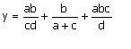
- 1 : y=a*b/c*d + b/ a+c + a*b*c /d ;
- 2 : y=a*b/c*d + b/(a+c) + a*b*c /d ;
- 3 : y=a*b/c/d + b/(a+c) + a*b*c /d ;
- 4 : y=a*b/c/d + b/a+c + a*b*c /d ;
- คำตอบที่ถูกต้อง : 3
ข้อที่ 148 :
- กำหนดให้ตัวแปรทุกตัวเป็นชนิดจำนวนเต็ม
ถ้า a = 100 ; b = 200 ; c = 50 ; d = 2 ;
a/c/d*b + b /(a+c) + a/d*c*b/1000 ; มีค่าเท่าไร
- 1 : 701
- 2 : 700
- 3 : 501
- 4 : 702
- คำตอบที่ถูกต้อง : 1
ข้อที่ 149 :
- ให้ตัวแปรทุกตัวเป็นชนิดจำนวนเต็ม
จงหาค่าของ x,a, และ b หลังจากส่วนของโปรแกรมข้างล่างนี้ทำงานเสร็จx = 0; a = -2; b = 5; x = x + a; a = a + b; b = b - 6; x = b + a; a = a + 1; b = b + 1; x = b + a; a = a + 1; b = b + 1; x = b + a; a = a + 1; b = b + 1;
- 1 : x=0, a = -2, b = 5
- 2 : x = 4, a = 6, b = 2
- 3 : x = 6, a =6, b = 2
- 4 : x = 6, a = 5, b = 1
- คำตอบที่ถูกต้อง : 3
ข้อที่ 150 :
- ให้ a และ b เป็นตัวแปรจำนวนเต็ม
ถ้า a = 5, b = 2 ผลลัพธ์ของ a / b มีค่าเท่าใด
- 1 : 2
- 2 : 2.5
- 3 : 1
- 4 : 0.5
- คำตอบที่ถูกต้อง : 1
ข้อที่ 151 :
- ให้ a และ b เป็นตัวแปรจำนวนเต็ม และ % คือ modulus operator
ถ้า a = 5, b = 2 ผลลัพธ์ของ a % b มีค่าเท่าใด
- 1 : 2
- 2 : 2.5
- 3 : 1
- 4 : 0.5
- คำตอบที่ถูกต้อง : 3
ข้อที่ 152 :
- ข้อใดให้ผลลัพธ์เท่ากับ (a+b/c-d)*e
- 1 : ((a+b)/c-d)*e
- 2 : (a+b)/c-d*e
- 3 : a+b/c*e-d*e
- 4 : (a*e+b*e/c-d*e)
- คำตอบที่ถูกต้อง : 4
ข้อที่ 153 :
- -(-15+(2*4-2))+((6+3)*5+7)/4 มีค่าเท่าใด
- 1 : 23
- 2 : 22
- 3 : 21
- 4 : 20
- คำตอบที่ถูกต้อง : 2
ข้อที่ 154 :
- ข้อใดต่อไปนี้ผิด
- 1 : (a AND b) เป็นจริง ก็ต่อเมื่อทั้ง a และ b มีค่าเป็นจริง
- 2 : (NOT a) เป็นเท็จ ก็ต่อเมื่อ a มีค่าเป็นจริง
- 3 : (a OR b) เป็นเท็จ ก็ต่อเมื่อทั้ง a และ b มีค่าเป็นเท็จ
- 4 : NOT (a AND b) เป็นจริง ก็ต่อเมื่อ a หรือ b มีค่าเป็นเท็จ
- คำตอบที่ถูกต้อง : 4
ข้อที่ 155 :
- กำหนดให้ X=1, Y=10, Z=100 นิพจน์ใดต่อไปนี้ได้ค่าตรรกะเป็นจริง
- 1 : NOT (Z/Y == Y)
- 2 : NOT(Y*X == Y)
- 3 : Z <= (Y*Y 1)
- 4 : X*Z => Z/X
- คำตอบที่ถูกต้อง : 4
ข้อที่ 156 :
- กำหนดให้ A=1, B=2, C=3, D=4 เงื่อนไขใดต่อไปนี้ ได้ค่าตรรกะเป็นเท็จ
- 1 : (A*B+C > C-B) && (A*D/B <= B)
- 2 : (A+B*C < B-C) || ((C+D)*A == A+B*C)
- 3 : (B/A <= D/C) || ((A+C) == (D*A)) && (C/B < A/D)
- 4 : (A < B) && (C < D) && (A > B) || (D==2*B)
- คำตอบที่ถูกต้อง : 3
ข้อที่ 157 :
- ให้ตัวแปร wet, cold, และ windy เป็นตัวแปรที่เก็บค่าจริงเท็จได้
ถ้า wet=true , cold=false, windy=false
(cold AND (NOT wet)) OR NOT(windy OR cold) มีค่าความจริงคืออะไร
- 1 : จริง
- 2 : เท็จ
- 3 : ไม่สามารถสรุปได้
- 4 : ประโยคที่เขียนหาค่าทางตรรกะไม่ได้
- คำตอบที่ถูกต้อง : 1
ข้อที่ 158 :
- ภาษาคอมพิวเตอร์ที่ใช้ในข้อนี้มีคุณสมบัติดังนี้
1. % แทน modulus operator
2. & แทน bitwise AND operator
3. ค่าตรรกะจริง มีค่าเท่ากับ 1
4. ค่าตรรกะเท็จ มีค่าเท่ากับ 0
5. สามารถนำค่าตรรกะไปประมวลผลกับจำนวนได้
จากการคำนวณต่อไปนี้ ข้อใดคำนวณหาคำตอบได้ถูกต้อง
- 1 : (3<2) + 5 มีค่าเท่ากับ 6
- 2 : (8 % 3) - 1 มีค่าเท่ากับ 0
- 3 : (3 = 3) + (6 <> 9) * 3 มีค่าเท่ากับ 6
- 4 : (23 2) & 1 มีค่าเท่ากับ 1
- คำตอบที่ถูกต้อง : 4
ข้อที่ 159 :
- ให้ y เป็นตัวแปรจำนวนเต็ม และ % คือ modulus operator
ข้อใดเป็นค่าของ y เมื่อ y = 1 5 / 3 + 9 % 4;
- 1 : 0
- 2 : 1
- 3 : -1
- 4 : 2
- คำตอบที่ถูกต้อง : 2
ข้อที่ 160 :
- หลังจากส่วนของโปรแกรมข้างล่างนี้ทำงานเสร็จ answer มีค่าเท่าใด
(% คือ modulus operator)
int a = 1, b = 2, c = 3: double f = 1.75, g = 1.0, h = 5 double answer; answer = a + g b * f c % b h * 2;
- 1 : -11.6
- 2 : -12.5
- 3 : -13.1
- 4 : 12.0
- คำตอบที่ถูกต้อง : 2
ข้อที่ 161 :
- กำหนดให้
1. fmod(x,y) คืนค่าเศษหลังจุดทศนิยมของผลหาร x/y
2. floor(x) คืนค่าจำนวนเต็มที่ได้จากการปัดเศษหลังจุดทศนิยมของค่าในตัวแปร x ทิ้งไป
หลังจากทำงานสองบรรทัดข้างล่างนี้แล้ว x มีค่าเป็นเท่าไร (ให้ x เป็นตัวแปรจำนวนจริง)
x = 19.75; x = fmod(x, floor(x));
- 1 : 1.00
- 2 : 19.75
- 3 : 0.75
- 4 : 1.75
- คำตอบที่ถูกต้อง : 3
ข้อที่ 162 :
- ให้ตัวแปรทุกตัวเป็นชนิดจำนวนเต็ม
หลังจากส่วนของโปรแกรมข้างล่างนี้ทำงานเสร็จ x1 และ x2 มีค่าเท่าใด?x2 = 1; x4 = 5; x2 = (x4 + x2 % 2 - 3); x4 = x2; x3 = x4; x1 = x3;
- 1 : x1 = 5, x2 = 5
- 2 : x1 = 3, x2 = 1
- 3 : x1 = 1, x2 = 5
- 4 : x1 = 3, x2 = 3
- คำตอบที่ถูกต้อง : 4
ข้อที่ 163 :
- ให้ตัวแปรทุกตัวเป็นชนิดจำนวนเต็ม
หลังจากส่วนของโปรแกรมข้างล่างนี้ทำงานเสร็จ ตัวแปร ans มีค่าเท่าใดx2 = 1; x4 = 5; x2 = (x4 + x2 % 2 - 3); x4 = x2; x3 = x4; x1 = x3; ans = x4 + x3 + x3 + x2 + x1;
- 1 : 18
- 2 : 17
- 3 : 16
- 4 : 15
- คำตอบที่ถูกต้อง : 4
ข้อที่ 164 :
- กำหนดให้
int x, y = 7, z = 5;
x = ((++y) + (z--)) % 10;
เมื่อส่วนของโปรแกรมข้างบนนี้ทำงานแล้ว ค่าของ x คืออะไร?
- 1 : 0
- 2 : 1
- 3 : 2
- 4 : 3
- คำตอบที่ถูกต้อง : 4
ข้อที่ 165 :
if(raining) if(window_open) puts("Close the window");
ส่วนของโปรแกรมด้านล่างข้อใดต่อไปนี้มีความหมายเหมือนกับส่วนของโปรแกรมด้านบน
- 1 : if(raining && window_open) puts("Close the window");
- 2 : if(raining || window_open) puts("Close the window");
- 3 : if(not (raining && window_open)) puts("Close the window);
- 4 : if(not (not raining || window_open) puts("Close the window);
- คำตอบที่ถูกต้อง : 1
ข้อที่ 166 :
- กำหนดให้ sqrt(Y) คือฟังก์ชันหาค่ารากที่สองของ Y
จงหาค่าของนิพจน์ต่อไปนี้ เมื่อให้ค่าตัวแปร M = -3 N = 5 X = -3.57 Y = 4.78
1. sqrt(Y) < N
2. (X > 0) OR (Y > 0)
3. (NOT((M > N) AND (X < Y))) OR ((M <= N) AND (X > X))
- 1 : 1. เท็จ 2. จริง 3. จริง
- 2 : 1. จริง 2. จริง 3. จริง
- 3 : 1. เท็จ 2. เท็จ 3. จริง
- 4 : 1. จริง 2. จริง 3. เท็จ
- คำตอบที่ถูกต้อง : 2
ข้อที่ 167 :
- กำหนดค่าของตัวแปรจำนวนเต็มต่อไปนี้
count = 16, num = 4;
และค่าของตัวแปรจำนวนจริงต่อไปนี้
value = 31.0, many = 2.0;
เมื่อกระทำตามคำสั่งต่อไปนี้
value = (value - count)*(count - num)/many + num/many;
ตัวแปร value มีค่าเท่าไร
- 1 : 91
- 2 : 92
- 3 : 101
- 4 : 102
- คำตอบที่ถูกต้อง : 2
ข้อที่ 168 :
- กำหนดตัวแปร Value = 50; เมื่อกระทำการ bit-wise XOR (exclusive or) ด้วยตัวแปร Value เอง จะมีผลอย่างไรกับค่าตัวแปร Value
- 1 : ตัวแปร Value จะมีค่าเท่ากับ 0
- 2 : ตัวแปร Value จะมีค่าเท่ากับ 1
- 3 : ตัวแปร Value จะมีค่าเท่ากับ 50
- 4 : ไม่มีข้อใดถูกต้อง
- คำตอบที่ถูกต้อง : 1
ข้อที่ 169 :
- ข้อใดคือความแตกต่างระหว่าง Bitwise Operator และ Logical Operator
- 1 : Bitwise Operator จะกระทำตรรกกับบิตข้อมูลของตัวแปร แต่ Logical Opeator จะกระทำตรรกกับค่าข้อมูลของตัวแปร
- 2 : Bitwise Operator จะกระทำตรรกกับตัวแปรชนิดจำนวนเต็ม แต่ Logical Operator จะกระทำตรรกกับตัวแปรชนิดใด ๆ ก็ได้
- 3 : Bitwise Operator จะกระทำตรรกกับตัวแปรชนิดใด ๆ ก็ได้ แต่ Logical Operator จะกระทำตรรกกับตัวแปรชนิดจำนวนเต็ม
- 4 : Bitwise Operator และ Logical Operator เป็นเพียงชื่อเรียกของ Compiler แต่ละภาษาเท่านั้น
- คำตอบที่ถูกต้อง : 1
ข้อที่ 170 :
- กำหนดให้ % แทน modulus operator
ถ้า 22 % x มีค่าเท่ากับ 4;
x มีค่าเท่าไร
- 1 : 2
- 2 : 4
- 3 : 6
- 4 : 8
- คำตอบที่ถูกต้อง : 3
ข้อที่ 171 :
- ข้อใดมีค่าจริงเสมอ
- 1 : P and P
- 2 : P or P
- 3 : not(P) and P
- 4 : not(P) or P
- คำตอบที่ถูกต้อง : 4
ข้อที่ 172 :
- กำหนดให้ฟังก์ชัน f มีลักษณะดังนี้
เงื่อนไขที่ 1 f(n) = f(n-1)+f(n-2) เมื่อ n เป็นจำนวนเต็ม, n ≥ 2
เงื่อนไขที่ 2 f(1) = 1 และ f(0) = 1
จงหาว่า f(7) มีค่าเท่าไร
- 1 : 0
- 2 : 11
- 3 : 21
- 4 : 31
- 5 : นับไม่ถ้วน
- คำตอบที่ถูกต้อง : 3
ข้อที่ 173 :
- กำหนดให้ฟังก์ชัน g มีคุณสมบัติดังนี้
g(0) = 1
g(n) = 2g(n-1) เมื่อ n > 0
จงหาค่า g(n)
- 1 : g(n) = 2n
- 2 : g(n) = n*n
- 3 : g(n) = 2 ยกกำลัง n
- 4 : g(n) = 2 ยกกำลัง (n+1)
- คำตอบที่ถูกต้อง : 3
ข้อที่ 174 :
- โอเปอเรเตอร์ ++ หมายถึงการกระทำในลักษณะใด
- 1 : เพิ่มค่าตัวแปรทีละหนึ่ง
- 2 : การหารค่าตัวแปร
- 3 : การยกกำลังของตัวแปร
- 4 : การหารแบบปัดส่วน
- 5 : การบวกแบบทวีคูณ
- คำตอบที่ถูกต้อง : 1
ข้อที่ 175 :
- 3+4*6/2+1 มีค่าเท่ากับ
- 1 : 9
- 2 : 11
- 3 : 14
- 4 : 16
- คำตอบที่ถูกต้อง : 4
ข้อที่ 176 :
- ข้อใดเป็นจริงเมื่อ q=10,r=5,s=10
- 1 : q<=(s/r)
- 2 : (s*r) <=q
- 3 : (q-r) == (s-q+r)
- 4 : (q) < (r-s)
- คำตอบที่ถูกต้อง : 3
ข้อที่ 177 :
- จงหานิพจน์ที่สมมูลกับ NOT( A OR B OR C)
- 1 : NOT ( (NOT A) AND (NOT B) AND (NOT C) )
- 2 : NOT ( A AND B AND C )
- 3 : ( NOT A ) AND (NOT B) AND (NOT C)
- 4 : A AND B AND C
- คำตอบที่ถูกต้อง : 3
ข้อที่ 178 :
- ฟุตบอลไทยจะชนะเมื่อมีเงื่อนใขต่อไปนื้ครบถ้วน
1. นักฟุตบอลสมบูรณ์
2. ฝนต้องไม่ตก
3. แข่งในเมึองไทย
3. แต่ถ้าศูนย์หน้าป่วยอาจแพ้ได้
ให้ A แทน นักฟุตบอลสมบูรณ์ B แทน ฝนไม่ตก C แทน แข่งในเมึองไทย D แทน ศูนย์หน้าป่วย
จงเขียนประโยคข้างบนเป็นนิพจน์ บูลลีน
- 1 : A AND B AND C AND D
- 2 : A AND B OR C AND D
- 3 : A AND B AND C OR D
- 4 : A AND B AND C AND (NOT D)
- คำตอบที่ถูกต้อง : 4
ข้อที่ 179 :
- (1 + 2 * 3 - 4) มีค่าเท่าใด
- 1 : -3
- 2 : 1
- 3 : 3
- 4 : 5
- คำตอบที่ถูกต้อง : 3
ข้อที่ 180 :
- ให้ a และ b เป็นตัวแปรจำนวนเต็ม และ % แทน modulus operator
อยากทราบว่า a และ b มีค่าเท่าใด ที่ทำให้a % b มีค่าเท่ากับ 1 b % a มีค่าเท่ากับ 2
- 1 : a = 5 และ b = 4
- 2 : a = 4 และ b = 5
- 3 : a = 3 และ b = 2
- 4 : a = 2 และ b = 3
- คำตอบที่ถูกต้อง : 3
ข้อที่ 181 :
- 3 + 5 * 5 -1 มีค่าเท่าใด
- 1 : 23
- 2 : 27
- 3 : 49
- 4 : 625
- คำตอบที่ถูกต้อง : 2
ข้อที่ 182 :
- ถ้าให้ตัวแปร wet, cold, windy มีค่าความจริงดังนี้
wet=true, cold=false, windy=false
เครื่องหมาย && คือ and , เครื่องหมาย || คือ or, เครื่องหมาย ! คือ not
จงหาค่าความจริงของ (cold && !wet) || !(windy || cold)
- 1 : จริง
- 2 : เท็จ
- 3 : นิพจน์ที่เขียนเป็นนิพจน์ทางตรรกศาสตร์ที่ผิด
- 4 : ไม่สามารถหาได้
- คำตอบที่ถูกต้อง : 1
ข้อที่ 183 :
- ข้อใดถูกต้อง
- 1 : (x > 0) จะเป็นจริง เมื่อ x เป็น 0
- 2 : (x >= 0) จะเป็นจริง เมื่อ x ไม่เท่ากับ 0
- 3 : (x <= 0) จะเป็นเท็จ เมื่อ x เป็นจำนวนบวก
- 4 : (x < 0) จะเป็นเท็จ เมื่อ x เป็นจำนวนลบ
- คำตอบที่ถูกต้อง : 3
ข้อที่ 184 :
- ให้ %แทน modulus operator และมีลำดับการทำงานจากซ้ายไปขวา
(203 % 10 % 9 % 7 % 5) มีค่าเท่าใด
- 1 : 0
- 2 : 1
- 3 : 2
- 4 : 3
- คำตอบที่ถูกต้อง : 4
ข้อที่ 185 :
- ให้ % แทน modulus operator
(201 % (11 % (8 % (7 % 4)))) มีค่าเท่าใด
- 1 : 0
- 2 : 1
- 3 : 2
- 4 : 3
- คำตอบที่ถูกต้อง : 1
ข้อที่ 186 :
- กำหนดให้ a,b,c เป็นตัวแปรชนิดจำนวนเต็ม ซึ่งมีค่าดังนี้
a=10,b=20,c=30
จงหาค่าของนิพจน์ a + b * c / a + 10
- 1 : 70
- 2 : 80
- 3 : 100
- 4 : 120
- คำตอบที่ถูกต้อง : 2
ข้อที่ 187 :
- ให้ && แทน AND, || แทน OR
operator ใดทำงานก่อนเป็นอันดับแรก ในการหาค่าของนิพจน์ตรรกศาสตร์ข้างล่างนี้
(x > y + 80) && (z > 100) || (x > 500)
- 1 : + ใน (y + 80)
- 2 : > ใน (x > y + 80)
- 3 : &&
- 4 : ||
- คำตอบที่ถูกต้อง : 1
ข้อที่ 188 :
- x = 1 + 2 + 3 + 4 + 5;
x = x + x;
x = x + x;
x = x + x;
เมื่อส่วนของโปรแกรมข้างบนนี้ทำงานเสร็จ x มีค่าเท่าใด
- 1 : 120
- 2 : 100
- 3 : 80
- 4 : 60
- คำตอบที่ถูกต้อง : 1
ข้อที่ 189 :
- กำหนดให้
1. ~ คือการกระทำ one-complement (หรือเรียกอีกอย่างว่า bit-wise not)
2. & คือการกระทำ bit-wise and
3. ! คือการกระทำ logical not
4. ผลของการกระทำ logical operation มีค่าได้เพียงสองค่าเท่านั้นคือ 1 (จริง) และ 0 (เท็จ)
กระบวนการ ~!(b & 1) จะได้ค่าใด หาก b เป็นตัวแปรจำนวนเต็มซึ่งมีค่าเท่ากับ 5
- 1 : 5
- 2 : 1
- 3 : 0
- 4 : 4
- คำตอบที่ถูกต้อง : 4
ข้อที่ 190 :
- สมมติ ว่ามีการต่อเครื่องคอมพิวเตอร์เข้ากับระบบภายนอก ซึ่งเมื่อมีการอ่านข้อมูลเข้ามาทางพอร์ตขนาด 8 บิต แล้ว 4 บิตบน จะเป็น ค่าข้อมูลจากแหล่งที่หนึ่ง และ 4 บิตล่าง เป็นค่าข้อมูลจากแหล่งที่สอง หากเราต้องการตรวจสอบว่า ค่าข้อมูลจากแหล่งที่หนึ่ง เป็นค่าใดนั้น เราจะต้องใช้นิพจน์ใดเพื่อหาค่าดังกล่าว สมมติว่าข้อมูลได้ถูกนำมาพักไว้ในตัวแปร x ก่อนที่จะส่งเข้านิพจน์ เพื่อทำการหาคำตอบ
- 1 : x>>4
- 2 : x/16
- 3 : x-64
- 4 : x%64
- 5 : ไม่สามารถหาได้ ต้องออกแบบให้มีการรับค่าแยกพอร์ตกันเท่านั้น
- คำตอบที่ถูกต้อง : 2
ข้อที่ 191 :
- ให้ตัวแปรทุกตัวเป็นตัวแปรจำนวนจริง
โดยที่ X1 = 1, X2 = 2, X3 = 3, X4 = 4
อยากทราบว่า X1 / X2 * X3 / X4 มีค่าเท่าใด
- 1 : 0.417
- 2 : 0.375
- 3 : 0.667
- 4 : 0.867
- คำตอบที่ถูกต้อง : 2
ข้อที่ 192 :
- กำหนดให้ / คือ operator หารแบบจำนวนเต็ม ซึ่งจะปัดเศษทิ้งเสมอ
นิพจน์ใดข้างล่างนี้ที่ไม่ได้ค่าเป็น 23
- 1 : 3 + 4 * 5
- 2 : 200 / 5 / 2 + 10 / 3
- 3 : 1 + 77 / 7 * 2
- 4 : 23 / 3 * 3
- คำตอบที่ถูกต้อง : 4
ข้อที่ 193 :
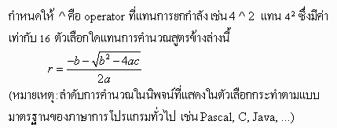
- 1 : r = -b - (b^2 - 4ac) ^ 0.5 / 2a
- 2 : r = -b - (b^2 - 4*a*c) ^ 0.5 / 2.0 * a
- 3 : r = -b - (b^2 - 4*a*c) ^ 0.5 / (2.0*a)
- 4 : r = (-b - (b*b - 4*a*c) ^ 0.5 ) / a / 2.0
- คำตอบที่ถูกต้อง : 4
ข้อที่ 194 :
- กำหนดให้ m เป็นตัวแปรชนิดจำนวนเต็ม
ข้อใดเป็นการตรวจสอบค่าของตัวแปร m ที่ต่างจากข้ออื่น
- 1 : NOT((m < 1) AND (m > 12))
- 2 : (m < 13) AND (m > 0)
- 3 : NOT(NOT(1 <= m) OR NOT(m <= 12))
- 4 : (1 <= m) AND (m => 12)
- คำตอบที่ถูกต้อง : 1
ข้อที่ 195 :
- ให้ n เป็นตัวแปรแบบจำนวนเต็ม และ % แทน modulus operator
จะทำอย่างไรจึงจะได้ตัวเลขสองตัว ณ ตำแหน่งหลักพันและหลักร้อยของจำนวนเต็มในตัวแปร n (เช่นถ้า n = 12345 สิ่งที่ต้องการคือ 23)
- 1 : (n / 1000) % 100
- 2 : (n % 1000) / 100
- 3 : (n % 10000) / 100
- 4 : (n % 10000) / 1000
- คำตอบที่ถูกต้อง : 3
ข้อที่ 196 :
- ให้ C คือตัวแปรจำนวนจริงที่แทนอุณหภูมิเป็นองศาเชลเชียส
ข้อใดข้างล่างนี้ไม่แทนการแปลงอุณหภมิใน C ให้เป็นองศาฟาเรนไฮต์เพื่อเก็บใส่ตัวแปร F
หมายเหตุ : 0 องศาเซลเซียสเทียบได้กับ 32 องศาฟาเรนไฮต์ และ 100 องศาเซลเซียสเทียบได้กับ 212 องศา ฟาเรนไฮต์
- 1 : F = C * 180/100 + 32
- 2 : F = 32 + 1.8 * C
- 3 : F = 1.8C + 32
- 4 : F = 9 * C / 5 + 32
- คำตอบที่ถูกต้อง : 3
ข้อที่ 197 :
- ให้ % แทน modulus operator
((201 % (11 % 8)) % (9 % 5)) มีค่าเท่าใด
- 1 : 0
- 2 : 1
- 3 : 2
- 4 : 3
- คำตอบที่ถูกต้อง : 1
ข้อที่ 198 :
- ให้ m คือตัวแปรจำนวนเต็ม
ข้อใดที่ไม่ใช่นิพจน์ที่แทนการทดสอบ 1 <= m <= 12
- 1 : ! ((m < 1) && (m > 12))
- 2 : ! ( (m < 1) || (m >= 13) )
- 3 : ! ( ! (1 <= m) || ! (m <= 12) )
- 4 : (1 <= m) && (m >= 12)
- คำตอบที่ถูกต้อง : 1
ข้อที่ 199 :
- ให้ n คือตัวแปรจำนวนเต็ม
ข้อใดให้ค่าจริง ก็ต่อเมื่อ n เก็บค่าที่เป็นจำนวนคี่
- 1 : (n == 1) || (n == 3) || (n == 5) || (n == 7) || (n == 9)
- 2 : (n / 10 == 1)
- 3 : (n / 2 == 1)
- 4 : (n % 2 == 1)
- คำตอบที่ถูกต้อง : 4
ข้อที่ 200 :
- ให้ n เป็นตัวแปรจำนวนเต็ม
ข้อใดให้ค่าจริงเมื่อ n มีค่าตั้งแต่ 13 ถึง 22
- 1 : (13 < n) && (n < 22)
- 2 : ! ((n > 22) || (n < 13))
- 3 : (12 < n) || (n < 23)
- 4 : (n - (22 - 13 + 1) > 0)
- คำตอบที่ถูกต้อง : 2
ข้อที่ 201 :
- ให้
n เป็นตัวแปรจำนวนเต็มที่เก็บรหัสไปรษณีย์ที่มีขนาด 5
หลักที่ใช้กันอยู่ในปัจจุบัน (เช่น 10600 แถวคลองสาน 10300 แถวปทุมวัน
กรุงเทพฯ)
ถ้าเป็นรหัสไปรษณีย์ของจังหวัดประจวบคีรีขันธ์ จะขึ้นต้นด้วย 77 เช่น 77000 คืออำเภอเมือง 77130 คืออำเภอทับสะแก
ข้อใดให้ค่าจริงเมื่อ n เก็บรหัสไปรษณีย์ของจังหวัดประจวบคีรีขันธ์
- 1 : (n % 77 == 0)
- 2 : (n % 100 == 77)
- 3 : (n / 1000 == 77)
- 4 : (n / 77 == 0)
- คำตอบที่ถูกต้อง : 3
ข้อที่ 202 :
- ให้ random() เป็นฟังก์ชันที่คืนจำนวนจริงที่สุ่มจากค่าในช่วง [0, 1) คือตั้งแต่ 0 ไปจนถึงเกือบ ๆ 1 (ไม่รวม 1)
ข้อใดเป็นการสุ่มค่าจำนวนเต็มในช่วง [a, b] คือตั้งแต่ a จนถึง b (a และ b เป็นตัวแปรจำนวนเต็ม โดยที่ a < b)
(กำหนดให้ floor(x) เป็นฟังก์ชันคืนจำนวนเต็มที่ได้จากการปัดเศษหลังจุดทศนิยมของ x ออกหมด)
- 1 : floor(random() * (b - a + 1))
- 2 : floor(a + random() * b)
- 3 : a + floor((b - a) * random())
- 4 : a + floor((b - a + 1) * random())
- คำตอบที่ถูกต้อง : 4
ข้อที่ 203 :
- ให้ a เป็นตัวแปรจำนวนเต็ม
สมมติว่า a เก็บจำนวนตั้งแต่ 0 ถึง 99 ข้อใดข้างล่างนี้ทำให้ b มีค่าเป็นจำนวนที่เขียนสลับหลักสิบกับหลักหน่วยของ a (เช่น a เก็บ 21 จะได้ b เก็บค่า 12 เป็นต้น)
- 1 : b = a / 10 + (a % 10)
- 2 : b = (a % 10) * 100 + (a % 10)
- 3 : b = 10 * (a % 1) + (a % 10)
- 4 : b = 10 * (a % 10) + (a / 10)
- คำตอบที่ถูกต้อง : 4
ข้อที่ 204 :
- ให้ตัวแปรทุกตัวเป็นตัวแปรจำนวนเต็ม
a = 2, b = 4, c = 8, d = 16;
อยากทราบว่า a + (c + d) / a * b + d / a มีค่าเท่าใด
- 1 : 58
- 2 : 60
- 3 : 13
- 4 : 122
- คำตอบที่ถูกต้อง : 1
ข้อที่ 205 :
- ให้ตัวแปรทุกตัวเป็นตัวแปรจำนวนเต็ม
a = 2, b = 4, c = 8, d = 16
อยากทราบว่า b * a + d / b / a + b * c มีค่าเท่าใด
- 1 : 24
- 2 : 35
- 3 : 42
- 4 : ไม่มีข้อใดถูก
- คำตอบที่ถูกต้อง : 3
ข้อที่ 206 :
- ให้ a เป็นตัวแปรจำนวนจริง, && แทนการ AND, || แทนการ OR
ข้อใดให้ผลเป็นเท็จตลอด ไม่ขึ้นกับค่าของ a
- 1 : (12 < a) && (a < 23)
- 2 : (12 < a) || (a < 23)
- 3 : (a < 12) && (a > 23)
- 4 : (a < 12) || (a > 23)
- คำตอบที่ถูกต้อง : 3
ข้อที่ 207 :
- ให้ a เป็นตัวแปรจำนวนจริง, && แทนการ AND, || แทนการ OR
ข้อใดให้ผลเป็นจริงตลอด ไม่ขึ้นกับค่าที่เก็บใน a
- 1 : (12 < a) && (a < 23)
- 2 : (12 < a) || (a < 23)
- 3 : (a < 12) && (a > 23)
- 4 : (a < 12) || (a < 23)
- คำตอบที่ถูกต้อง : 2
ข้อที่ 208 :
- เส้นตรงเส้นหนึ่งผ่านจุด (x1, y1) และ (x2, y2) บนระนาบสองมิติ
ข้อใดเป็นนิพจน์ที่คำนวณหา slope ของเส้นตรงเส้นนี้
- 1 : y1 - y2 / x1 - x2
- 2 : y2 - y1 / x2 - x1
- 3 : (y1 - y2) / x1 - x2
- 4 : (y1 - y2) / (x1 - x2)
- คำตอบที่ถูกต้อง : 4
ข้อที่ 209 :
- ให้ (x1, y1) และ (x2, y2) เป็นจุดสองจุดบนระนาบสองมิติ
และ sqrt(d) คือฟังก์ชันที่คืนค่ารากที่สองของ d
ข้อใดคือนิพจน์ที่คำนวณหาระยะห่างที่สั้นสุดระหว่างจุดสองจุดนี้
- 1 : sqrt((x1-x2)*(x1-x2)+(y1-y2)*(y1-y2))
- 2 : sqrt((x1-x2)*(x2-x1)+(y1-y2)*(y2-y1))
- 3 : sqrt((x2-x1)*(x1-x2)+(y2-y1)*(y1-y2))
- 4 : sqrt((y1-y2)*(y2-y1)+(x1-x2)*(x2-x1))
- คำตอบที่ถูกต้อง : 1
ข้อที่ 210 :
- ให้ n คือตัวแปรจำนวนเต็ม
ข้อใดให้ค่าจริง ก็ต่อเมื่อ n เก็บค่าที่เป็นจำนวนคู่
- 1 : (n == 0) || (n == 2) || (n == 4) || (n == 6) || (n == 8)
- 2 : (n / 10 == 0)
- 3 : (n % 2 == 0)
- 4 : (n / 2 == 0)
- คำตอบที่ถูกต้อง : 3
ข้อที่ 211 :
- ให้ n คือตัวแปรจำนวนเต็ม
ข้อใดให้ค่าจริง ก็ต่อเมื่อ n เก็บค่าที่เป็นจำนวนคู่
- 1 : (n%10 == 0) || (n%10 == 2) || (n%10 == 4) || (n%10 == 6) || (n%10 == 8)
- 2 : (n/10 == 0) || (n/10 == 2) || (n/10 == 4) || (n/10 == 6) || (n/10 == 8)
- 3 : (n%10 == 0) && (n%10 == 2) && (n%10 == 4) && (n%10 == 6) && (n%10 == 8)
- 4 : (n/10 == 0) && (n/10 == 2) && (n/10 == 4) && (n/10 == 6) && (n/10 == 8)
- คำตอบที่ถูกต้อง : 1
ข้อที่ 212 :
- ให้ n คือตัวแปรจำนวนเต็ม
ข้อใดให้ค่าจริง ก็ต่อเมื่อ n เก็บค่าที่เป็นจำนวนคู่
- 1 : (2*n/2 == n)
- 2 : (n/2*2 == n)
- 3 : (n/10*10 == n)
- 4 : (10*n/10 == n)
- คำตอบที่ถูกต้อง : 2
ข้อที่ 213 :
- ให้ n คือตัวแปรจำนวนเต็ม
ข้อใดให้ค่าจริง ก็ต่อเมื่อ n เก็บค่าที่เป็นจำนวนคี่
- 1 : (n/2*2 == n+1)
- 2 : ((n+1)/2*2 == n)
- 3 : ((n-1)/2*2 == n)
- 4 : (n/2*2 == n - 1)
- คำตอบที่ถูกต้อง : 4
ข้อที่ 214 :
- วันสงกรานต์ตรงกับวันอะไร สามารถคำนวณได้ดังนี้
1. เปลี่ยน ปี พ.ศ. เป็น ค.ศ.
2. นำสองหลักทางขวาของปี ค.ศ คูณด้วย 1.2 แล้วบวกด้วย 11
3. นำผลในข้อ 2 ปัดเศษหลังจุดทศนิยมทิ้ง (ใช้ฟังก์ชัน floor) แล้วหารด้วย 7
4. เศษของการหาร 7 ถ้าเป็น 0 คืออาทิตย์ 1 คือจันทร์, ..., 6 คือเสาร์
การคำนวณนี้ใช้ได้ตั้งแต่ปี 2543 ไปประมาณร้อยปี
ถ้า y เก็บปีพ.ศ. ข้อใดคำนวณผลในข้อ 4
- 1 : floor(11 + (((year - 543) / 100) * 1.2)) % 7
- 2 : floor((((year - 543) % 100) * 1.2) + 11) % 7
- 3 : floor((((year - 543) / 100) * 1.2) + 11) / 7
- 4 : ไม่มีข้อใดถูก
- คำตอบที่ถูกต้อง : 2
ข้อที่ 215 :
- ให้ random() เป็นฟังก์ชันที่คืนจำนวนจริงที่สุ่มจากค่าในช่วง [0, 1) คือตั้งแต่ 0 ไปจนถึงเกือบ ๆ 1 (ไม่รวม 1)
ข้อใดเป็นการสุ่มค่าจำนวนเต็มตั้งแต่ 0 จนถึง 50 (กำหนดให้ floor(x) เป็นฟังก์ชันคืนจำนวนเต็มที่ได้จากการปัดเศษหลังจุดทศนิยมของ x ออกหมด)
- 1 : floor( 50*random() )
- 2 : floor( 50*random() ) % 50
- 3 : floor( 51*random() ) % 100
- 4 : ไม่มีข้อใดถูก
- คำตอบที่ถูกต้อง : 3
ข้อที่ 216 :
- ให้ random() เป็นฟังก์ชันที่คืนจำนวนจริงที่สุ่มจากค่าในช่วง [0, 1) คือตั้งแต่ 0 ไปจนถึงเกือบ ๆ 1 (ไม่รวม 1)
ข้อใดเป็นการสุ่มค่าจำนวนเต็มในช่วง [-10, 10] คือตั้งแต่ -10 จนถึง 10
(กำหนดให้ floor(x) เป็นฟังก์ชันคืนจำนวนเต็มที่ได้จากการปัดเศษหลังจุดทศนิยมของ x ออกหมด)
- 1 : floor(21 * random()) % 100 - 10
- 2 : floor(21 * random()) % 20 - 10
- 3 : floor(20 * random()) % 20 - 10
- 4 : ไม่มีข้อใดถูก
- คำตอบที่ถูกต้อง : 1
ข้อที่ 217 :
- กำหนดให้ a = 5, b = 3 , c = 2 , d = 0.5 ถ้า s = a*b+c; s =
- 1 : 15
- 2 : 16
- 3 : 17
- 4 : 18
- คำตอบที่ถูกต้อง : 3
ข้อที่ 218 :
- กำหนดให้ a = 5, b = 3 , c = 2 , d = 0.5 ถ้า t = b+c*b; t =
- 1 : 8
- 2 : 9
- 3 : 10
- 4 : 12
- คำตอบที่ถูกต้อง : 2
ข้อที่ 219 :
- กำหนดให้ a = 5, b = 3 , c = 2 , d = 0.5 ถ้า v = a*a+b*b+c*c; v =
- 1 : 36
- 2 : 28
- 3 : 38
- 4 : 48
- คำตอบที่ถูกต้อง : 3
ข้อที่ 220 :
- กำหนดให้ a = 5, b = 3 , c = 2 , d = 0.5 ถ้า x = a%5; x =
- 1 : 0
- 2 : 2
- 3 : 4
- 4 : 6
- คำตอบที่ถูกต้อง : 1
ข้อที่ 221 :
- กำหนดให้ a = 5, b = 3 , c = 2 , d = 0.5 ถ้า y = a/c; y =
- 1 : 1.5
- 2 : 2
- 3 : 2.5
- 4 : 3
- คำตอบที่ถูกต้อง : 3
ข้อที่ 222 :
- กำหนดให้ a = 5, b = 3 , c = 2 , d = 0.5 ถ้า z = a/d; z =
- 1 : 0
- 2 : 10
- 3 : 11
- 4 : 12
- คำตอบที่ถูกต้อง : 2
ข้อที่ 223 :
- การดำเนินการโดยใช้เครื่องหมาย && จะให้ผลลัพธ์เป็นอย่างไร เมื่อ i = 2 และ j = 5 ในการดำเนินการ (i>3) && (j>4)
- 1 : เป็นจริง
- 2 : เป็นเท็จ
- 3 : เป็นบวกเสมอ
- 4 : เท่ากับหนึ่ง
- คำตอบที่ถูกต้อง : 2
ข้อที่ 224 :
- value1 , value2 ที่แสดงโดยชุดคำสั่งต่อไปนี้มีค่าเท่าใด
n = 20;
value1 = n++;
value2 = ++n;
printf(%d , %d ,value1,value2);
- 1 : 20 , 21
- 2 : 21 , 20
- 3 : 21 , 21
- 4 : 20 , 22
- คำตอบที่ถูกต้อง : 4
เนื้อหาวิชา : 4 : การทำงานแบบลำดับ
ข้อที่ 225 :
- ถ้าให้ x = 5; y = 7; z = 12;
และ k = (x + y) * z + y;
จงหาค่าของ k
- 1 : 74
- 2 : 128
- 3 : 151
- 4 : 96
- 5 : 47
- คำตอบที่ถูกต้อง : 3
ข้อที่ 226 :
- สมการ z เท่ากับ x กำลังสอง บวก y กำลังสอง เขียนเป็นนิพจน์ในภาษาคอมพิวเตอร์ได้อย่างไร
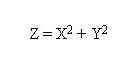
- 1 : z = x2 + y2;
- 2 : z = x * x + y * y;
- 3 : z = x * 2 + y * 2;
- 4 : z = x ** 2 + y ** 2;
- 5 : z = xx + yy;
- คำตอบที่ถูกต้อง : 2
ข้อที่ 227 :
- ถ้ากำหนดให้ Relative Precedence ของ Operators เป็นไปตามลำดับดังนี้ 1) ++ -- 2) * / % 3) + - จากลำดับ Operator Precedence ด้านบน จงjหาค่าตัวแปรดังต่อไปนี้ x = 4 + 5 * 3;
- 1 : x= 27
- 2 : x = 19
- 3 : x= 17
- 4 : ไม่สามารถระบุค่าได้
- 5 : ถูกทุกข้อ
- คำตอบที่ถูกต้อง : 2
ข้อที่ 228 :
- กำหนดให้โปรแกรมมีชุดคำสั่งคือ
i = 0
i = i + 1
j = 1
j = i + j
เมื่อคอมพิวเตอร์ทำโปรแกรมนี้จนจบ ผลลัพธ์จากการทำงานคือข้อใด
- 1 : i มีค่า 0
- 2 : j มีค่า 0
- 3 : j มีค่า 1
- 4 : j มีค่า 2
- 5 : j มีค่า 3
- คำตอบที่ถูกต้อง : 4
ข้อที่ 229 :
- กำหนดให้โปรแกรมมีขั้นตอนการทำงานดังนี้
เริ่มต้น
รับค่า x และ y
นำค่า x + y ใส่ลงใน a
นำค่า x y ใส่ลงใน b
แสดงค่าผลคูณของ a กับ b
จบ
ถ้าเครื่องคอมพิวเตอร์ทำโปรแกรมนี้ โดยผู้ใช้ใส่ค่า 8 และ 2 ผลลัพธ์ที่ได้คือข้อใด
- 1 : 8
- 2 : 16
- 3 : 28
- 4 : 60
- 5 : 66
- คำตอบที่ถูกต้อง : 4
ข้อที่ 230 :
- กำหนดให้โปรแกรมมีขั้นตอนการทำงานดังนี้
เริ่มต้น
รับค่า x, y และ z
นำค่าที่มากที่สุดของ x, y, z ไปใส่ไว้ใน a
นำค่าที่น้อยที่สุดของ x, y, z ไปใส่ไว้ใน c
นำค่าเฉลี่ยของ x, y, z ไปใส่ไว้ใน b
จบ
ถ้าเครื่องคอมพิวเตอร์ทำโปรแกรมนี้จนจบแล้วข้อใดเป็นจริง
- 1 : a < b < c
- 2 : a > b > c
- 3 : a <= b <= c
- 4 : a >= b >= c
- 5 : a >= b <= c
- คำตอบที่ถูกต้อง : 4
ข้อที่ 231 :
- ข้อใดได้ผลลัพธ์บนหน้าจอเหมือนกับคำสั่งต่อไปนี้ int a = 50; PRINTtoSCREEN(a+200);
- 1 : int a = 350; PRINTtoSCREEN(a); a = a - 100;
- 2 : PRINTtoSCREEN(a); int a = 50; a = a * 5;
- 3 : PRINTtoSCREEN(a); a = a - 100; int a = 350;
- 4 : a = a * 5; int a = 50; PRINTtoSCREEN(a);
- 5 : int a = 50; a = a * 5; PRINTtoSCREEN(a);
- คำตอบที่ถูกต้อง : 5
ข้อที่ 232 :
- ถ้า x, y และ z มีค่าเป็น 18, 12 และ 4 ตามลำดับ ข้อใดต่อไปนี้เป็นค่าถูกต้อง เมื่อมีการทำงานเป็นดังโปรแกรม x = x y; y = y x; z = x * y / z;
- 1 : x = 9;
- 2 : y = 12;
- 3 : z = 18;
- 4 : x = 2/3 ของ z;
- 5 : y = 1/3 ของ z;
- คำตอบที่ถูกต้อง : 4
ข้อที่ 233 :
- เมื่อ x, y และ z มีค่าเป็น 100, 13 และ 91 ตามลำดับ และมีการทำงานดังโปรแกรม
1: z = z / y;
2: y = y + z;
3: x = x * z / y;
ข้อใดถูกต้อง
- 1 : x มีค่าเท่ากับ 25
- 2 : z มีค่าเท่ากับ 8
- 3 : y มีค่าเท่ากับ 21
- 4 : ถ้าต้องการให้ x มีค่าเท่ากับ 12 จะต้องเปลี่ยนคำสั่งในบรรทัดที่ 3 เป็น (x+z)/y
- 5 : ถ้าต้องการให้ x มีค่าเท่ากับ 25 จะต้องเพิ่มคำสั่ง z = z-2;ก่อนหน้าบรรทัดที่ 3
- คำตอบที่ถูกต้อง : 5
ข้อที่ 234 :
- ค่า X จากโปรแกรมนี้คืออะไร
X = 3
Y = X + 1
X = Y + 2
END
- 1 : 6
- 2 : 5
- 3 : 7
- 4 : 4
- 5 : 3
- คำตอบที่ถูกต้อง : 1
ข้อที่ 235 :
- ค่า X จากโปรแกรมนี้คืออะไร
X = X + 2
X = 0
X = X + 1
END
- 1 : 0
- 2 : 1
- 3 : 2
- 4 : 3
- 5 : 4
- คำตอบที่ถูกต้อง : 2
ข้อที่ 236 :
- ค่า X จากโปรแกรมนี้คืออะไร
Y = 11
X = Y
Y = Y + 3
END
- 1 : 0
- 2 : 3
- 3 : 11
- 4 : 14
- คำตอบที่ถูกต้อง : 3
ข้อที่ 237 :
- จากโปรแกรมภาษา C จงหาค่าของตัวแปร Newcount และ Count เมื่อโปรแกรมสิ้นสุดการทำงาน
--------------------------------------------------
int Newcount=0, Count=1;
Newcount = Count++;
Count = 3+Newcount++;
- 1 : 2,4
- 2 : 2,5
- 3 : 3,4
- 4 : 3,5
- คำตอบที่ถูกต้อง : 1
ข้อที่ 238 :
- จากโปรแกรม ภาษา C ต่อไปนี้ จงหาค่าของตัวแปร Newcount และ Count เมื่อโปรแกรมหยุดทำงาน
------------------------------------------
int Newcount=0, Count=1;
Newcount = Count++;
Count = 3+Newcount++;
Newcount = ++Count;
- 1 : 4,5
- 2 : 4,6
- 3 : 5,5
- 4 : 5,6
- คำตอบที่ถูกต้อง : 3
ข้อที่ 239 :
- x = 10
y = 5
x = y
y = x
หลังจากโปรแกรมทำงานครบทั้งสี่บรรทัด ข้อใดผิด
- 1 : ตัวแปร x จะมีค่าเท่ากับ 5
- 2 : x - y จะมีค่าเท่ากับ 5
- 3 : y จะมีค่าเท่าเดิม
- 4 : ไม่มีข้อใดผิด
- คำตอบที่ถูกต้อง : 2
ข้อที่ 240 :
- ถ้า b = 10 และ c = 5 ผลการทำงานหลังจากบรรทัดที่ 2 แล้ว a จะมีค่าเท่าใด
บรรทัดที่ 1 b = b + c ;
บรรทัดที่ 2 a = b - 5 ;
- 1 : 5
- 2 : 20
- 3 : 25
- 4 : 15
- 5 : 10
- คำตอบที่ถูกต้อง : 5
ข้อที่ 241 :
- ถ้า b = 5 และ c = 8 ผลการทำงานหลังจากบรรทัดที่ 3 แล้ว a จะมีค่าเท่าใด
บรรทัดที่ 1 b = b * 2;
บรรทัดที่ 2 c = c + b ;
บรรทัดที่ 3 a = b * c;
- 1 : 40
- 2 : 65
- 3 : 80
- 4 : 180
- คำตอบที่ถูกต้อง : 4
ข้อที่ 242 :
- ถ้า b = 10 และ c = 5 ผลการทำงานหลังจากบรรทัดที่ 4 แล้ว c จะมีค่าเท่าใด
บรรทัดที่ 1 b = b + c;
บรรทัดที่ 2 a = b - 5;
บรรทัดที่ 3 b = a -c;
บรรทัดที่ 4 c = b + a;
- 1 : -10
- 2 : 5
- 3 : 10
- 4 : 15
- คำตอบที่ถูกต้อง : 4
ข้อที่ 243 :
- ลำดับคำสั่งในข้อใดต่อไปนี้ให้ผลลัพธ์เป็นการสลับค่าของตัวแปร x กับ ตัวแปร y
- 1 : x=y; y=x;
- 2 : x=x+y; y=x-y; x=y-x;
- 3 : x=x-y; y=y+x; x=x+y;
- 4 : x=x+y; y=x-y; x=x-y;
- คำตอบที่ถูกต้อง : 4
ข้อที่ 244 :
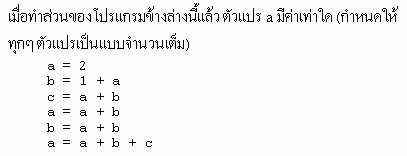
- 1 : 12
- 2 : 13
- 3 : 15
- 4 : 18
- 5 : 20
- คำตอบที่ถูกต้อง : 4
ข้อที่ 245 :
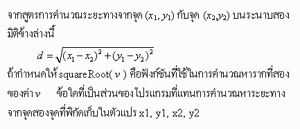
- 1 : dx2 = x1 - x2 * x1 - x2; dy2 = y1 - y2 * y1 - y2; d = squareRoot( dx2 + dy2 );
- 2 : dx = x1 - x2; dy = y2 - y1; d = squareRoot( dx*dx, dy*dy );
- 3 : dx = x2 - x1; dy = y2 - y1; dx2 = dx*dx; dy2 = dy*dy; d = dx2+dy2; d = squareRoot( d );
- 4 : dx = x1 - x2; dy = y1 - y2; dxy = dx*2 + dy*2; d = squareRoot(dxy);
- คำตอบที่ถูกต้อง : 3
ข้อที่ 246 :
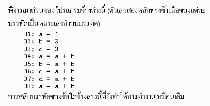
- 1 : บรรทัด 04 กับ 05
- 2 : บรรทัด 05 กับ 06
- 3 : บรรทัด 06 กับ 07
- 4 : บรรทัด 07 กับ 08
- คำตอบที่ถูกต้อง : 3
ข้อที่ 247 :
- โครง สร้างแบบใดมีลักษณะการทำงานการวนรอบเพื่อทำงานซ้ำจะเริ่มต้นจากการทำงานตาม คำสั่งของ do ก่อน หนึ่งรอบ แล้วจึงเริ่มตรวจสอบ เงื่อนไขที่คำสั่ง while
- 1 : for
- 2 : if-else
- 3 : while
- 4 : do-while
- คำตอบที่ถูกต้อง : 4
ข้อที่ 248 :
- คำสั่งใดเป็นการขึ้นบรรทัดใหม่
- 1 : \m
- 2 : \n
- 3 : \o
- 4 : \p
- คำตอบที่ถูกต้อง : 2
ข้อที่ 249 :
- จากโปรแกรม main() { int a,b,c,d; printf(Enter three number ); scanf(%d%d%d,&a,&b,&c); d =c; if(a>d) d = a; if(b > d) d = b; printf(value of D = %.2f,); } เป็นโปรแกรมใด
- 1 : เป็นโปรแกรมหาค่าผลรวม
- 2 : เป็นโปรแกรมหาค่าเฉลี่ย
- 3 : เป็นโปรแกรมหาค่ามากที่สุด
- 4 : เป็นโปรแกรมหาค่าน้อยที่สุด
- คำตอบที่ถูกต้อง : 3
ข้อที่ 250 :
- สัญลักษณ์ดังรูปหมายถึงสัญลักษณ์ในผังงานข้อใด
- 1 : กิจกรรมประมวลผล
- 2 : จุดเริ่มต้น หรือจุดสุดท้ายของกิจกรรม
- 3 : การตัดสินใจหรือเปรียบเทียบ
- 4 : แฟ้มข้อมูล
- คำตอบที่ถูกต้อง : 2
ข้อที่ 251 :
- สัญลักษณ์ดังรูปหมายถึงสัญลักษณ์ในผังงานข้อใด
- 1 : การแสดงผลข้อมูลทางจอภาพ
- 2 : การรับข้อมูล และแสดงข้อมูล
- 3 : เส้นแสดงทิศทางของกิจกรรม
- 4 : การตัดสินใจหรือเปรียบเทียบ
- คำตอบที่ถูกต้อง : 4
ข้อที่ 252 :
- ข้อใดคือสัญลักษณ์ของผังงานการตัดสินใจหรือเปรียบเทียบ
- 1 : รูปสี่เหลี่ยมคางหมู
- 2 : รูปสี่เหลี่ยมขนมเปียกปูน
- 3 : รูปสี่เหลี่ยมจตุรัส
- 4 : รูปวงกลม
- คำตอบที่ถูกต้อง : 2
เนื้อหาวิชา : 5 : การทำงานแบบเลือก
ข้อที่ 253 :
- จงหาผลลัพธ์จากขั้นตอนดังต่อไปนี้
ขั้นที่ 1 เริ่มการทำงาน
ให้ตัวแปร x , y เป็น integer
ขั้นที่ 2 ให้ตัวแปร x =20 ; y =25 ;
ขั้นที่ 3 ให้ตัวแปร x = x + 10 ; y =25 ;
ขั้นที่ 4 ให้ตัวแปร x น้อยกว่า y ให้ ตัวแปร = x + 20
มิฉะนั้นแล้ว ให้ตัวแปร x = x- 5 ;
ขั้นที่ 5 พิมพ์ค่าตัวแปร x และตัวแปร y
ขั้นที่ 6 จบการทำงาน
- 1 : x= 30 ; y = 25:
- 2 : x= 40 ; y = 25:
- 3 : x= 50 ; y = 25:
- 4 : x= 25 ; y = 25:
- คำตอบที่ถูกต้อง : 4
ข้อที่ 254 :
- จงหาผลลัพธ์จากขั้นตอนดังต่อไปนี้
ขั้นที่ 1 เริ่มการทำงาน
ให้ตัวแปร x , y เป็น integer
ขั้นที่ 2 ให้ตัวแปร x = 10 ; y =40 ;
ขั้นที่ 3 ให้ตัวแปร x = x + 2 ; y = y - 5 ;
ขั้นที่ 4 ให้ตัวแปร x = x + 2 ; y = y - 5 ;
ขั้นที่ 5 ให้ตัวแปร x = x + 2 ; y = y - 5 ;
ขั้นที่ 6 พิมพ์ค่า x,y จบ
- 1 : ( x = 16 ; y = 25 ;)
- 2 : ( x = 14 ; y = 30 ;)
- 3 : ( x = 12 ; y = 35 ;)
- 4 : ( x = 10 ; y = 40 ;)
- คำตอบที่ถูกต้อง : 1
ข้อที่ 255 :
- ถ้า A = 20 เงื่อนไขดังต่อไปนี้ให้ผลลัพธ์อะไร

- 1 : B=0
- 2 : B=10
- 3 : B=20
- 4 : B=30
- 5 : ไม่มีข้อถูก
- คำตอบที่ถูกต้อง : 2
ข้อที่ 256 :
- ถ้า A = 5 เงื่อนไขดังต่อไปนี้ให้ผลลัพธ์อะไร
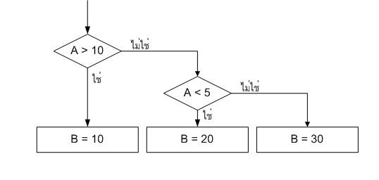
- 1 : B=0
- 2 : B=10
- 3 : B=20
- 4 : B=30
- 5 : ไม่มีข้อถูก
- คำตอบที่ถูกต้อง : 4
ข้อที่ 257 :
- ถ้า A = 8 เงื่อนไขดังต่อไปนี้ให้ผลลัพธ์อะไร

- 1 : B=0
- 2 : B=10
- 3 : B=20
- 4 : B=30
- 5 : ไม่มีข้อถูก
- คำตอบที่ถูกต้อง : 4
ข้อที่ 258 :
- จาก Flow chart ที่กำหนด ถ้าหลังจาก RUN โปรแกรม
แล้วค่า y =15+0.2x ถามว่าค่า x มีโอกาส เป็นเท่าไร

- 1 : x อาจจะเป็น 84 หรือ 83 หรือ 79 หรือ 75
- 2 : x อาจจะเป็น 87 หรือ 82 หรือ 77 หรือ 76
- 3 : x อาจจะเป็น 85 หรือ 80 หรือ 77 หรือ 76
- 4 : x อาจจะเป็น 84 หรือ 83 หรือ 78 หรือ 75
- คำตอบที่ถูกต้อง : 3
ข้อที่ 259 :
- จาก Flow chart ที่กำหนด จงหาค่า y
เมื่อ ครั้งที่ 1 ให้ x= 79 , ครั้งที่ 2 ให้ x= 15 ;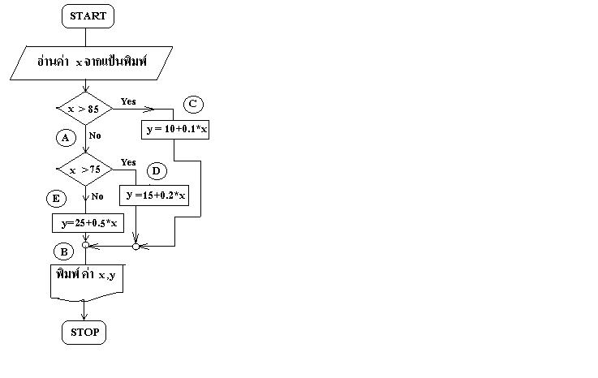
- 1 : 30.8 , 32.5
- 2 : 17.9, 32.5
- 3 : 17.9, 30.8
- 4 : 30.8, 17.9
- คำตอบที่ถูกต้อง : 1
ข้อที่ 260 :
- ผังงานต่อไปนี้เป็นผังงานของข้อใด
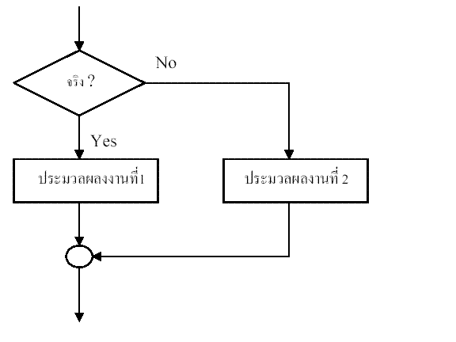
- 1 : if....then....else
- 2 : if .. then
- 3 : for loop
- 4 : ไม่มีข้อใดถูก
- คำตอบที่ถูกต้อง : 1
ข้อที่ 261 :
- ผังงานต่อไปนี้เป็นผังงานของข้อใด
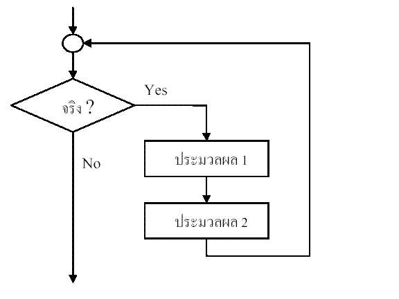
- 1 : if....then....else
- 2 : while do ......
- 3 : if.. then
- 4 : ไม่มีข้อใดถูก
- คำตอบที่ถูกต้อง : 2
ข้อที่ 262 :
- ผังงานต่อไปนี้เป็นผังงานของข้อใด
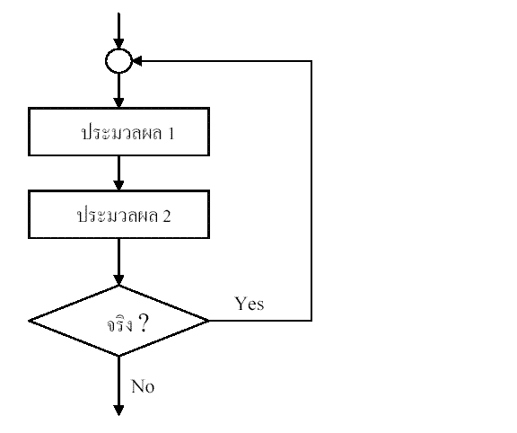
- 1 : if....then....else
- 2 : while
do ...... - 3 : do.... while
- 4 : ไม่มีข้อใดถูก
- คำตอบที่ถูกต้อง : 3
ข้อที่ 263 :
- จากคำสั่งต่อไปนี้เมื่อทำงานจนจบ X มีค่าเท่าไร เมื่อ a = 100
if (a >= 1000)
X = 1;
else if (a < 10)
X=2;
else if (a > 100)
X = 3;
else
X = 4;
- 1 : 0
- 2 : 1
- 3 : 2
- 4 : 3
- 5 : 4
- คำตอบที่ถูกต้อง : 5
ข้อที่ 264 :
- แสดงค่าในตัวแปร x ที่เกิดจากผลการทำงานของโปรแกรมนี้
int x=50;
if (x > 50)
x=x+10;
else if (x < 30)
x=x+20;
else x=x+30;
x=x+10;
- 1 : 90
- 2 : 80
- 3 : 70
- 4 : 60
- คำตอบที่ถูกต้อง : 1
ข้อที่ 265 :
- จาก algorithm ต่อไปนี้ เมื่อสิ้นสุดการทำงาน x,y,z จะมีค่าเป็นเท่าใด
เครื่องหมาย ! คือ not operator
-----------------------------------------------------------------------------
1: int x=6, y = 1, z = 2;
2: if (!x) {
3: x = y + 1;
4: z = x - y;
5: } else
6: y = x - z;
- 1 : x=6, y=1, z=2
- 2 : x=6, y=4, z=2
- 3 : x=2, y=1, z=1
- 4 : x=2, y=4, z=1
- คำตอบที่ถูกต้อง : 2
ข้อที่ 266 :
- จากโปรแกรมที่ให้ ถ้ากำหนดค่าให้อาเรย์ x ดังนี้ 0, 4, 10, 1,3
โดยเริ่มตั้งแต่ index 0 ถึง 4 เมื่อโปรแกรมทำงานจบแล้ว ans มีค่าเท่ากับเท่าใด
กรณีภาษา C ans = x[0];
for (i=1; i<=4; i++)
{
if (ans
} หรือ ในภาษา pascal ans := x[0];
for i:=1 to 4 do
begin
if (ans
end
- 1 : 0
- 2 : 4
- 3 : 10
- 4 : 1
- 5 : 3
- คำตอบที่ถูกต้อง : 3
ข้อที่ 267 :
- โปรแกรมต่อไปนี้ถ้าต้องการให้ ans = 0 ต้องป้อนค่า num เป็นเท่าไร
if( ((num*4-15) < num) || ((num*4-15)>num))
ans = 1;
else
ans = 0;
หมายเหตุ || คือ OR operator ใน pascal
- 1 : 1
- 2 : 2
- 3 : 3
- 4 : 4
- 5 : 5
- คำตอบที่ถูกต้อง : 5
ข้อที่ 268 :
- ข้อใดมีความหมายเช่นเดียวกันกับ a += (n1 >= n2) ? n1 : n2;
- 1 : if (n1 < n2) a += n2; else a += n1;
- 2 : if (n1 >= n2) a = n1; else a = n2;
- 3 : if (n2 < n1) a = a + n2; else a = a + n1;
- 4 : if (n2 > n1) a = n2; else a = n1;
- 5 : มีคำตอบที่ถูกมากกว่า 1 ข้อ
- คำตอบที่ถูกต้อง : 1
ข้อที่ 269 :
- จากการใช้ if (a <= b) c = a; else c = b; ข้อใดกล่าวถูก?
- 1 : c จะมีค่าเท่ากับ a ก็ต่อเมื่อค่าของ a มากกว่าค่าของ b
- 2 : c จะมีค่าเท่ากับ b ก็ต่อเมื่อค่าของ a เท่ากับค่าของ b
- 3 : ค่าของ c จะไม่มากกว่าค่าของ b เสมอ
- 4 : ค่าของ c จะมากกว่าค่าของ a ก็ต่อเมื่อค่าของ a มากกว่า b
- 5 : มีคำตอบที่ถูกมากกว่า 1 ข้อ
- คำตอบที่ถูกต้อง : 3
ข้อที่ 270 :
- ในการใช้ if statement เพื่อเช็คดูว่าค่าของ n เป็นเลขคี่ ซึ่งอยู่ในช่วงตั้งแต่ 10 30
หรือไม่นั้น เราต้องใช้คำสั่งอย่างไร? หมายเหตุ == คือเปรียบเทียบเท่ากับ
!= ไม่เท่ากับ
|| OR
&& AND
/ div
% mod
- 1 : if (((n % 2) == 1) || ((n >= 10) && (n <= 30)))
- 2 : if (((n / 2) == 1) && ((n >= 10) && (n <= 30)))
- 3 : if (((n % 2) != 0) && ((n >= 10) && (n <= 30)))
- 4 : if (((n % 2) == 0) || ((n >= 10) && (n <= 30)))
- 5 : มีคำตอบที่ถูกมากกว่า 1 ข้อ
- คำตอบที่ถูกต้อง : 3
ข้อที่ 271 :
- กำหนดตัวแปร n เป็น integer
ถ้าต้องการเช็คว่าตัวแปร n เก็บเลขที่ลงท้ายด้วย 3
(เช่น 3, 13, 23, 33, ...) เราต้องใช้คำสั่ง if อย่างไร?
หมายเหตุ % คือ mod , / คือ div , == เปรียบเทียบเท่ากับ
- 1 : if((n % 3) == 0)
- 2 : if((n / 3) == 0)
- 3 : if((n % 10) == 3)
- 4 : if((n / 10) == 3)
- 5 : มีคำตอบที่ถูกมากกว่า 1 ข้อ
- คำตอบที่ถูกต้อง : 3
ข้อที่ 272 :
- กำหนด constant ชื่อ MAXNUM มีค่า 20 ตัวแปร integer number มีค่า 30; if (number > MAXNUM) number = MAXNUM; PRINT_TO_SCREEN(number); จากโปรแกรมด้านบน number ที่ได้จะมีค่าอย่างไร
- 1 : number = 0
- 2 : number = 20
- 3 : number = 30
- 4 : number = 40
- 5 : ไม่มีข้อใดถูกต้อง
- คำตอบที่ถูกต้อง : 2
ข้อที่ 273 :
- แสดงผลการทำงานของคำสั่งต่อไปนี้ โดยกำหนดการป้อนค่า
1. N= 5
2. N= 2
IF (N < 5) THEN
IF (N == 4) THEN PRINT "Hello."
ELSE IF (N == 3) THEN PRINT "Goodbye."
PRINT "Siam"
- 1 : 1. Siam 2. Goodbye
- 2 : 1. Hello 2. Goodbye
- 3 : 1. Siam 2. Siam
- 4 : 1. Hello 2. Goodbye
- คำตอบที่ถูกต้อง : 3
ข้อที่ 274 :
- ให้เครื่องหมาย && คือ and operator
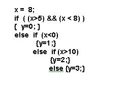
- 1 : 0
- 2 : 1
- 3 : 2
- 4 : 3
- 5 : ผิดทุกข้อ
- คำตอบที่ถูกต้อง : 4
ข้อที่ 275 :
- กำหนดให้โปรแกรมมีขั้นตอนการทำงานดังนี้
เริ่มต้น
รับค่า x และ y
ถ้า x > y และ y > 0 ให้นำ 0 ใส่ลงไปใน y
จบ
ถ้าคอมพิวเตอร์ทำโปรแกรมนี้จนจบ โดยผู้ใช้ใส่ค่า 5 และ 3 แล้วทำให้ข้อใดเป็นจริง
- 1 : x มีค่า 3
- 2 : y มีค่า 3
- 3 : y มีค่า 5
- 4 : y มีค่า 0
- 5 : y มีค่า -1
- คำตอบที่ถูกต้อง : 4
ข้อที่ 276 :
- กำหนดให้โปรแกรมมีขั้นตอนการทำงานดังนี้
เริ่มต้น
รับค่า x และ y และ z
ถ้า x > y แล้ว z = 0
มิฉะนั้น z = 1
จบ
ถ้าคอมพิวเตอร์ทำโปรแกรมนี้จนจบ แล้วทำให้ข้อใดเป็นจริง
- 1 : z มีค่า 0 หรือ 1 เท่านั้น
- 2 : z มีค่า 0 เมื่อ x = y
- 3 : z มีค่า 0
- 4 : z มีค่า 1
- 5 : z มีค่า 10
- คำตอบที่ถูกต้อง : 1
ข้อที่ 277 :
- กำหนดให้โปรแกรมมีขั้นตอนการทำงานดังนี้
เริ่มต้น
รับค่า x และ y และ z
ถ้า (x + y) > z แล้ว z = x + y
มิฉะนั้น ถ้า z = 0 แล้ว z = y x
จบ
ถ้าคอมพิวเตอร์ทำโปรแกรมนี้จนจบ โดยผู้ใช้ใส่ค่า 1 และ 2 และ 4 แล้วทำให้ข้อใดเป็นจริง
- 1 : z มีค่า 1
- 2 : z มีค่า 2
- 3 : z มีค่า 3
- 4 : z มีค่า 4
- 5 : z มีค่า 5
- คำตอบที่ถูกต้อง : 4
ข้อที่ 278 :
- ข้อใดสมมูลกับประโยค if (x <= 80 and x > 49)
- 1 : if (x = 80 and x > 49)
- 2 : if (49 < x <= 80)
- 3 : if (x < 80 or x > 50)
- 4 : if (not (x > 80 or x < 50))
- 5 : if (not (x > 80 and x < 50))
- คำตอบที่ถูกต้อง : 4
ข้อที่ 279 :
- ผลลัพธ์ของนิพจน์ในข้อใดที่แตกต่างจากผลลัพธ์ของนิพจน์ (5+4) / 3 < 3
- 1 : not (50 >= 14)
- 2 : 3 + 8 >= 15 or 5 <= 3
- 3 : 3 - 4 <= 10 and 3 > 3
- 4 : 14 / 7 < 1 or not (9 < 4)
- 5 : not (100 > 80 and 10 < 50)
- คำตอบที่ถูกต้อง : 4
ข้อที่ 280 :
- if (วันนี้ฝนตก หรือ เป็นวันหยุด) then ฉันจะไปออกกำลังกาย
else ฉันจะไปซื้อของ
สมมุติว่า "วันนี้เป็นวันทำงาน แต่ว่าฝนตก"
ข้อใดคือผลลัพธ์ที่ถูกต้อง
- 1 : ฉันจะไปออกกำลังกาย
- 2 : ฉันจะไปซื้อของ
- 3 : ฉันจะไปออกกำลังกาย และ ฉันจะไปซื้อของ
- 4 : ฉันจะไปออกกำลังกาย แต่ ฉันจะไม่ไปซื้อของ
- 5 : ฉันจะไม่ไปออกกำลังกาย และ ฉันจะไปซื้อของ
- คำตอบที่ถูกต้อง : 1
ข้อที่ 281 :
- A B เป็น เงื่อนไข X เป็น ตัวแปร
X = 0
IF A THEN
BEGIN
IF B THEN X = 1 ELSE X = 2
END
ELSE X = 3
STOP
ถ้า A จริง B เท็จ เมื่อโปรแกรมหยุด X มีค่าเท่าไร
- 1 : 0
- 2 : 1
- 3 : 2
- 4 : 3
- 5 : ไม่ทราบค่า
- คำตอบที่ถูกต้อง : 3
ข้อที่ 282 :
- A B เป็น เงื่อนไข X เป็น ตัวแปร
X = 0
IF A THEN
BEGIN
IF B THEN X = 1 ELSE X = 2
END
ELSE X = 3
STOP
ถ้า A เท็จ B จริง เมื่อโปรแกรมหยุด X มีค่าเท่าไร
- 1 : 0
- 2 : 1
- 3 : 2
- 4 : 3
- 5 : ไม่ทราบค่า
- คำตอบที่ถูกต้อง : 4
ข้อที่ 283 :
- num = -1
if (num < 0) then (num = num + 1)
num มีค่าเท่าไร หลังการทำงานของโปรแกรมนี้
- 1 : -1
- 2 : 0
- 3 : 1
- 4 : 2
- 5 : ไม่มีคำตอบที่ถูกต้อง
- คำตอบที่ถูกต้อง : 2
ข้อที่ 284 :
- answer = 10
if (a > 10) then answer = answer * 2
if (a < 5) then answer = answer - 1
else if (a > 7) then answer = answer + 1
เมื่อมีการกำหนดค่าให้ตัวแปร a ข้อความใดเป็นจริง
- 1 : ถ้า a = 3 จะได้ค่า answer = 9
และถ้า a = 8 จะได้ค่า answer = 11 - 2 : ถ้า a = 3 จะได้ค่า answer = 11
และเมื่อ a = 7 จะได้ค่า answer = 10 - 3 : เมื่อ a = 7 จะได้ค่า answer = 20
เมื่อ a = 8 จะได้ค่า answer = 10 - 4 : เมื่อ a = 1 จะได้ค่า answer = 9
เมื่อ a = 7 จะได้ค่า answer = 20 - 5 : answer = 10 ไม่ว่า a จะมีค่าเป็นเท่าไรก็ตาม
- คำตอบที่ถูกต้อง : 1
ข้อที่ 285 :
- ข้อ 3 ดูโจทย์จากรูปภาพประกอบคำถาม
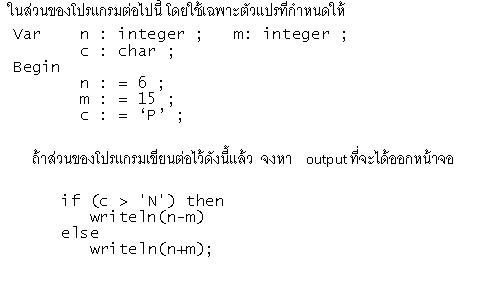
- 1 : -9
- 2 : 9
- 3 : 21
- 4 : -21
- คำตอบที่ถูกต้อง : 1
ข้อที่ 286 :
- ข้อ 1 จงบอกว่าอุปกรณ์ใดต่อไปนี้ เป็นอุปกรณ์ประเภท standard output
- 1 : printer
- 2 : monitor
- 3 : diskette
- 4 : Key board
- คำตอบที่ถูกต้อง : 2
ข้อที่ 287 :
- ข้อ 3 ดูโจทย์จากรูปภาพประกอบคำถาม
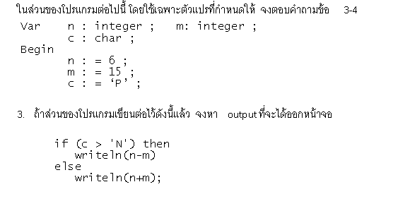
- 1 : -9
- 2 : 9
- 3 : 21
- 4 : -21
- คำตอบที่ถูกต้อง : 1
ข้อที่ 288 :
- ข้อ 4 ดูโจทย์จากรูปภาพประกอบคำถาม
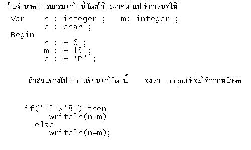
- 1 : -9
- 2 : 9
- 3 : 21
- 4 : -21
- คำตอบที่ถูกต้อง : 3
ข้อที่ 289 :
- ต้องการเขียนโปรแกรมเพื่อคำนวณหาค่าเสื้อรวมเมื่อราคาเสื้อเป็นดังนี้
น้อยกว่า 10 ตัวราคาตัวละ 250 บาท
น้อยกว่า 20 ตัวราคาตัวละ 230 บาท
น้อยกว่า 30 ตัวราคาตัวละ 200 บาท
น้อยกว่า 50 ตัวราคาตัวละ 150 บาท
ควรเลือกใช้คำสั่งใดต่อไปนี้
- 1 : if....then
- 2 : if....then.....else
- 3 : if...then...else if... (หรือ nested if)
- 4 : for
- 5 : while
- คำตอบที่ถูกต้อง : 3
ข้อที่ 290 :
- ให้ V เป็นตัวแปรชนิดจำนวนจริงมีค่า 2.5
if V > 2.0 then
begin
M := 3.0 * V;
end
else
begin
M := 0.0;
end;
V :=M;
หลังจากคำสั่งข้างต้นถูกกระทำแล้ว ค่า V เป็นเท่าไร หมายเหตุ begin...end ก็คือ {..} และ := ก็คือ = ในภาษา C
- 1 : 0.0
- 2 : 2.5
- 3 : 7.5
- 4 : 10
- คำตอบที่ถูกต้อง : 3
ข้อที่ 291 :
- จาก flowchart ข้างล่างนี้ การทำงานจะมาถึงกล่ิอง J ได้อย่างไร
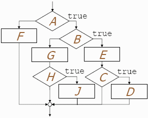
- 1 : A, B, C, และ H ต้องเป็นจริง
- 2 : A และ H เป็นจริง B เป็นเท็จ
- 3 : A และ B เป็นเท็จ ส่วน H เป็นจริง
- 4 : A, H และ C เป็นเท็จ
- 5 : ไม่มีข้อใดถูก
- คำตอบที่ถูกต้อง : 2
เนื้อหาวิชา : 6 : การทำงานแบบวงวน
ข้อที่ 292 :
- จงเขียนผลตอบสนองของโปรแกรมดังต่อไปนี้
#include
int main(void){
function(5);
}
void function(int i){
printf("%d ", i);
if(i==0) return;
else function(i-1);
}
- 1 : 0 1 2 3 4 5
- 2 : 5 4 3 2 1
- 3 : 1 2 3 4 5
- 4 : 5 4 3 2 1 0
- คำตอบที่ถูกต้อง : 4
ข้อที่ 293 :
- จาก Flow chart ที่กำหนด จงหาค่า val , n และวนรอบกี่ครั้ง หลังจากจบโปรแกรม ให้ค่า y=0 ,x = 1 , k=2 ,b=9
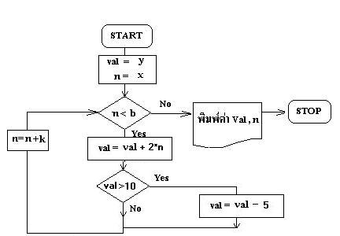
- 1 : val =32 ,n=9 ;วน 4รอบ
- 2 : val=28 ,n=11 ;วน 5รอบ
- 3 : val =28 ,n=9 ;วน 4รอบ
- 4 : val=22 ,n=9 ;วน 4รอบ
- คำตอบที่ถูกต้อง : 4
ข้อที่ 294 :
- ถ้า A = 4 และ B = 2เมื่อออกจากวงรอบ(loop) ผลลัพธ์จะเป็นอะไร

- 1 : B = 8
- 2 : B= 16
- 3 : B=32
- 4 : B=64
- 5 : ไม่มีข้อถูก
- คำตอบที่ถูกต้อง : 3
ข้อที่ 295 :
- ถ้า A = 1 และ B = 2เมื่อออกจากวงรอบ(loop) ผลลัพธ์จะเป็นอะไร

- 1 : B = 0
- 2 : B=2
- 3 : B=4
- 4 : B=6
- 5 : ไม่มีข้อถูก
- คำตอบที่ถูกต้อง : 3
ข้อที่ 296 :
- ถ้า A = 5 และ B = 1เมื่อออกจากวงรอบ(loop) ผลลัพธ์จะเป็นอะไร
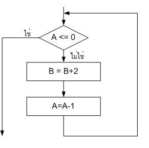
- 1 : B=7
- 2 : B=9
- 3 : B=11
- 4 : B=13
- 5 : ไม่มีข้อถูก
- คำตอบที่ถูกต้อง : 3
ข้อที่ 297 :
- ถ้า A = 1 และ B = 2เมื่อออกจากวงรอบ(loop) ผลลัพธ์จะเป็นอะไร
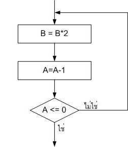
- 1 : B=0
- 2 : B=2
- 3 : B=4
- 4 : B=8
- 5 : ไม่มีข้อถูก
- คำตอบที่ถูกต้อง : 3
ข้อที่ 298 :
- ความแตกต่างระหว่างการทำงานของคำสั่ง While และ Do-While คืออะไร
- 1 : คำสั่ง While ทำคำสั่งก่อนแล้วจึงตรวจสอบเงื่อนไข ส่วนคำสั่ง Do-While ตรวจสอบเงื่อนไขก่อนถ้าเป็นจริงจึงทำคำสั่งที่ต้องการ
- 2 : คำสั่ง While ทำคำสั่งก่อนแล้วจึงตรวจสอบเงื่อนไข ส่วนคำสั่ง Do-While ตรวจสอบเงื่อนไขก่อนถ้าเป็นเท็จจึงทำคำสั่งที่ต้องการ
- 3 : คำสั่ง While ตรวจสอบเงื่อนไขก่อนถ้าเป็นจริงจึงทำคำสั่งที่ต้องการ ส่วนคำสั่ง Do-While ทำคำสั่งก่อนแล้วจึงตรวจสอบเงื่อนไข
- 4 : คำสั่ง While ตรวจสอบเงื่อนไขก่อนถ้าเป็นเท็จจึงทำคำสั่งที่ต้องการ ส่วนคำสั่ง Do-While ทำคำสั่งก่อนแล้วจึงตรวจสอบเงื่อนไข
- 5 : ทั้งสองคำสั่งทำงานเป็นวงวนเหมือนกันไม่แตกต่างกัน
- คำตอบที่ถูกต้อง : 3
ข้อที่ 299 :
- จากคำสั่งต่อไปนี้ ค่า n[3][3] มีค่าเท่ากับเท่าใด
for (i=0; i<3; i++) {
for (j=0; j<3; j++) {
n[j][i] = i;
}
}
- 1 : 0
- 2 : 1
- 3 : 2
- 4 : 3
- คำตอบที่ถูกต้อง : 3
ข้อที่ 300 :
- ให้หาค่า y สุดท้ายที่ได้จาก algorithm ต่อไปนี้
---------------------------------------------------
x = 5
y = 1
while (x > 0) {
x = x - 1
y = y * x
print(y)
}
- 1 : 0
- 2 : 4
- 3 : 10
- 4 : ไม่มีข้อใดถูก
- คำตอบที่ถูกต้อง : 1
ข้อที่ 301 :
- จาก algorithm ด้านล่าง จงเลือกคำตอบที่ถูกที่สุด
-----------------------------------------------------------------------------
i=1 และ j=0
for (i = 1; i <= 4; i = i+1) {
if ((i - 1) / 2 == 0){
print(i)
j = i+1;
}
}
- 1 : โปรแกรมนี้พิมพ์ค่า i ทั้งหมด 5 ครั้ง
- 2 : ค่า i ค่าสุดท้ายคือ 4
- 3 : ค่า j สุดท้าย คือ 2
- 4 : ค่า j สุดท้าย คือ 6
- คำตอบที่ถูกต้อง : 3
ข้อที่ 302 :
- จาก algorithm ด้านล่า่ง โปรแกรมจะทำงานวน loop ทั้งหมดกี่รอบ
--------------------------------------------------------------------------
กำหนด x=0, y = 1, z = 5
while(x < 6) {
y = z + x
if (y < 11) {
x = y + x
}
}
- 1 : 1
- 2 : 2
- 3 : 3
- 4 : 5
- คำตอบที่ถูกต้อง : 2
ข้อที่ 303 :
- ข้อใดต่อไปนี้ได้ค่าตัวแปร sum เท่ากับโปรแกรมต่อไปนี้
sum = 0;
for(i=1; i<=100; i++)
{
sum = sum +i;
}
- 1 : sum = 0;
j = 0;
for(i=0; i<100; i++)
{
j = i+1;
sum = sum +j;
} - 2 : sum = 0;
j = 0;
for(i=1;i<100;i++)
{
j = i+1;
sum = sum +j;
} - 3 : sum = 0;
for(i=1;i<100;i++)
{
sum = sum +i;
} - 4 : sum = 0;
for(i=0;i<=99;i++)
{
sum = sum +i;
} - 5 : sum = 0;
for(i=0;i<100;i++)
{
sum = sum +i;
} - คำตอบที่ถูกต้อง : 1
ข้อที่ 304 :
- โปรแกรมที่ให้มีการทำงานวนรอบทั้งหมดกี่รอบ และแต่ละรอบ a มีค่าเท่ากับเท่าไร
int a=10;
while (a >= 1)
{
a = a - 2;
}
- 1 : 10 รอบ แต่ละรอบ a มีค่าเท่ากับ 1,2,3,4,5,6,7,8,9 และ 10
- 2 : 10 รอบ แต่ละรอบ a มีค่าเท่ากับ 10,9,8,7,6,5,4,3,2 และ 1
- 3 : 5 รอบ แต่ละรอบ a มีค่าเท่ากับ 9,7,5,3 และ 1
- 4 : 5 รอบ แต่ละรอบ a มีค่าเท่ากับ 10,8,6,4 และ 2
- 5 : 5 รอบ แต่ละรอบ a มีค่าเท่ากับ 2,4,6,8 และ 10
- คำตอบที่ถูกต้อง : 4
ข้อที่ 305 :
- กำหนดให้
int i;
for (i = 1;i < 10; i++){
if ( i > 7 ) continue;
if ( i == 5 ) break;
printf(KORAT);
}
สตริง KORAT จะถูกพิมพ์ทั้งหมดกี่ครั้ง?
- 1 : 10
- 2 : 6
- 3 : 4
- 4 : 5
- 5 : 7
- คำตอบที่ถูกต้อง : 3
ข้อที่ 306 :
- ข้อใดมีความหมายตรงกับคำว่า Inifinite Loop มากที่สุด
- 1 : ผิดเงื่อนไขโปรแกรมจะไม่ทำงานภายในลูป
- 2 : ทำงานวนซ้ำตามที่กำหนดค่าตัวแปรในโปรแกรม
- 3 : ทำงานวนซ้ำตามที่กำหนดในโปรแกรมโดยมีจุดสิ้นสุด
- 4 : ทำงานวนซ้ำตามที่กำหนดในโปรแกรมโดยไม่มีจุดสิ้นสุด
- 5 : ไม่มีข้อใดถูกต้อง
- คำตอบที่ถูกต้อง : 4
ข้อที่ 307 :
- i = 0;
for (j = -2; j < 3; j++) {
i = j + i++;
} ค่า i จะมีค่าเท่าไร
- 1 : 2
- 2 : 4
- 3 : 6
- 4 : -6
- 5 : -4
- คำตอบที่ถูกต้อง : 3
ข้อที่ 308 :
- j = k = 0;
do {
j += k;
k += 2;
} while (k < 20);
อยากทราบว่าค่า j มีค่าเท่าไร
- 1 : 50
- 2 : 60
- 3 : 70
- 4 : 80
- 5 : 90
- คำตอบที่ถูกต้อง : 5
ข้อที่ 309 :
- Recursive Function มีความหมายว่าอย่างไร
- 1 : คือฟังก์ชันที่ทำงานแบบไม่รู้จบ
- 2 : คือฟังก์ชันที่มีการเรียกจากภายในฟังก์ชันเอง
- 3 : คือฟังก์ชันที่มีเงื่อนไขจึงจะออกจากโปรแกรมได้
- 4 : คือฟังก์ชันสำหรับทำงานในโปรแกรมระบบเท่านั้น
- คำตอบที่ถูกต้อง : 2
ข้อที่ 310 :
- Nested Loops มีความหมายอย่างไร
- 1 : คือ Loop ทีโปรแกรมวนไม่รู้จบ
- 2 : คือ Loop ที่มีคำสั่งประเภทเดียวกันซ้อนอยู่
- 3 : คือ Loop ที่มีคำสั่งวนซ้อนกันมากกว่า 1 Loop
- 4 : คือ Loop เฉพาะที่มีเงื่อนไขสำหรับออกจากโปรแกรม
- คำตอบที่ถูกต้อง : 3
ข้อที่ 311 :
- กำหนดให้โปรแกรมมีขั้นตอนการทำงานดังนี้
เริ่มต้น
x = 1
ทำซ้ำ
x = x + 1
จนกระทั่ง x > 5
จบ
ถ้าคอมพิวเตอร์ทำโปรแกรมนี้จนจบ แล้วทำให้ข้อใดเป็นจริง
- 1 : x มีค่า 1
- 2 : x มีค่า 5
- 3 : x มีค่า 6
- 4 : x มีค่า 7
- 5 : x มีค่า 8
- คำตอบที่ถูกต้อง : 3
ข้อที่ 312 :
- กำหนดให้โปรแกรมมีขั้นตอนการทำงานดังนี้
เริ่มต้นโปรแกรม
รับค่า x และ y
ทำซ้ำ
ถ้า x > y แล้ว
{ แสดงค่า x ; x = x 1 ; }
จนกระทั่ง x = y
จบโปรแกรม
ถ้าคอมพิวเตอร์ทำโปรแกรมนี้จนจบ โดยผู้ใช้ใส่ค่า 5 และ 1 แล้วจะมีการแสดงค่าอะไร
- 1 : 5
- 2 : 5 1
- 3 : 5 4 3 2
- 4 : 5 4 3 2 1
- 5 : 5 4 3 2 1 0
- คำตอบที่ถูกต้อง : 3
ข้อที่ 313 :
- กำหนดให้โปรแกรมมีขั้นตอนการทำงานดังนี้
BEGIN
sum = 0 ;
FOR count = 1 to n
{ sum = sum + 1 ; write(sum) ; }
END
ถ้าคอมพิวเตอร์ทำโปรแกรมนี้จนจบ แล้วจะมีการแสดงค่าอะไร
- 1 : 0 1 2 3 4 ไปจนถึง n
- 2 : 1 2 3 4 ไปจนถึง n
- 3 : 0 1 3 4 7 ไปจนถึง n + (n + 1)
- 4 : 1 3 4 7 ไปจนถึง n + (n + 1)
- 5 : 1 3 5 7 ไปจนถึง n
- คำตอบที่ถูกต้อง : 2
ข้อที่ 314 :
- ในการประมวลผลการทำงานของฟังก์ชันแบบเรียกซ้ำ สิ่งสำคัญที่จำเป็นต้องทราบคือข้อใด
- 1 : จุดเริ่มต้นของการทำงาน
- 2 : จุดสิ้นสุดการทำงาน
- 3 : ค่าเริ่มต้นของการทำงาน
- 4 : นิพจน์ทั่วไปที่ไม่เรียกซ้ำ
- คำตอบที่ถูกต้อง : 2
ข้อที่ 315 :
- ใน การหาค่าของ n ตัวแรกที่ทำให้ผลบวกของอนุกรม 1 + 2 +3 +..+ n > 15 เป็นจริง ถ้าตรวจสอบเงื่อนไข ผลบวก > 15 ในการออกจากวงวนหลังจากที่ทำการบวกสะสมค่าของพจน์ โปรแกรมนี้จะวนอยู่ในวงวนกี่เที่ยว
- 1 : 5 เที่ยว
- 2 : 6 เที่ยว
- 3 : 7 เที่ยว
- 4 : 8 เที่ยว
- คำตอบที่ถูกต้อง : 2
ข้อที่ 316 :
- จาก psuedocode:
a=0;
while a<20
show a on a screen;
a=a+1
a=0;end ผลลัพธ์ค่า a หลังจาก run เสร็จแล้วคือ
- 1 : 0
- 2 : 20
- 3 : 19
- 4 : ไมมีคำตอบที่ถูกเนื่องจากโปรแกรมไม่สมบูรณ์
- 5 : ไม่มีคำตอบที่ถูกเนื่องจากโปรแกรมทำงานไม่หยุด
- คำตอบที่ถูกต้อง : 5
ข้อที่ 317 :
- พิจารณาโปรแกรมต่อไปนี้
S = 0
X = 0
WHILE X < N
BEGIN
S = S + 2
X = X + 1
END
STOP
ถ้า N = 10 เมื่อโปรแกรมวิ่งจนจบ S มีค่าเท่าไร
- 1 : 10
- 2 : 12
- 3 : 20
- 4 : 22
- 5 : ไม่มีข้อใดถูก
- คำตอบที่ถูกต้อง : 3
ข้อที่ 318 :
- ต้องการ บวก 1 ถึง N คำตอบเป็น S โปรแกรมต่อไปนี้ บรรทัดไหนผิด
1 S = 0
2 X = 1
3 WHILE X < N
BEGIN
4 S = S + X
5 X = X + 1
END
STOP
- 1 : 1
- 2 : 2
- 3 : 3
- 4 : 4
- 5 : 5
- คำตอบที่ถูกต้อง : 3
ข้อที่ 319 :
- ให้ N เป็น เลขคู่ มากกว่า 0
ขณะที่โปรแกรมทำงานอยู่ X กับ Y มีค่าตรงกันพร้อนกันได้หรือไม่ ค่าใด
X = 0
Y = N
WHILE X < N
BEGIN
X = X + 1
Y = Y - 1
END
STOP
- 1 : ไม่มีวันตรงกัน
- 2 : 0
- 3 : N
- 4 : N/2
- 5 : N/2 + 1
- คำตอบที่ถูกต้อง : 4
ข้อที่ 320 :
- x = 0
for count = 1 to 3
x = x + count
x มีค่าเป็นเท่าไร หลังการทำงานของโปรแกรมนี้
- 1 : 3
- 2 : 4
- 3 : 5
- 4 : 6
- 5 : 7
- คำตอบที่ถูกต้อง : 4
ข้อที่ 321 :
- value = -1
while (value < 3)
if (value < 0) then (value = value + 1)
value มีค่าเท่าไร หลังการทำงานของโปรแกรมนี้
- 1 : -1
- 2 : 0
- 3 : 2
- 4 : 4
- 5 : ไม่มีคำตอบ เนื่องจากโปรแกรมไม่หยุดทำงาน
- คำตอบที่ถูกต้อง : 5
ข้อที่ 322 :
- จงหาค่าเงื่อนไขที่เพื่อให้ algorithm ได้ผลลัพธ์ต่อไปนี้
1 2 3 4 5 6 7 8
-------------------------------------
count = 1
while ( ___________ ) {
Show count
Show " "
count = count + 1
}
- 1 : count <=9
- 2 : count !=9
- 3 : count+1<=8
- 4 : count+1 < 10
- คำตอบที่ถูกต้อง : 4
ข้อที่ 323 :
- ถ้าต้องการวนรับอายุของผู้ใช้จนกว่าจะใส่ค่าที่มากกว่าศูนย์ น่าจะตรวจสอบเงื่อนไขก่อนหรือหลังจากรับค่าอายุเก็บไว้ในตัวแปร
- 1 : ก่อน
- 2 : หลัง
- 3 : กลาง
- 4 : ก่อนหรือกลาง
- คำตอบที่ถูกต้อง : 2
ข้อที่ 324 :
- คำสั่งเทียมต่อไปนี้สอดคล้องกับผลลัพธ์ในข้อใด Set A = 1 Set R = 0.2 FOR I = 1 to N do A = A*(1+R)
- 1 : A = (1+R)^N
- 2 : A = A*(1+R)
- 3 : A = (1+R)*N
- 4 : A = (1+R)(1+R)
- 5 : A = A*(1+R)*N
- คำตอบที่ถูกต้อง : 1
ข้อที่ 325 :
- ชุดคำสั่งเทียม DO X = X + 1; WHILE (X < 10); เทียบเท่ากับคำสั่งในข้อใด
- 1 : FOR N=1 TO 10 X=X+1; END FOR
- 2 : WHILE (X<10) DO X=X+1; END WHILE
- 3 : LOOP X=X+1; IF (X>=10) EXIT; END LOOP
- 4 : REPEAT X=X+1; UNTIL (X<10);
- คำตอบที่ถูกต้อง : 3
ข้อที่ 326 :
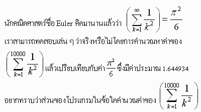
- 1 :
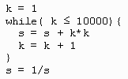
- 2 :
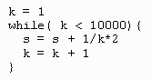
- 3 :
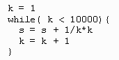
- 4 :
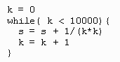
- 5 :
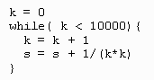
- คำตอบที่ถูกต้อง : 5
ข้อที่ 327 :
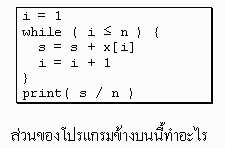
- 1 : หาผลรวม
- 2 : หาค่าเฉลี่ย
- 3 : หาค่าเบี่ยงเบนมาตรฐาน
- 4 : หาค่ามัธยฐาน
- คำตอบที่ถูกต้อง : 2
ข้อที่ 328 :
- กำหนดให้ == คือ operator ในการตรวจสอบความเท่ากันของข้อมูล
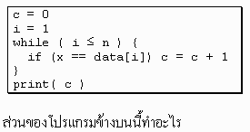
- 1 : หาค่ามากสุด
- 2 : นับจำนวนตัวที่มาก
- 3 : หาว่ามีค่าใน data ที่มีค่าเท่ากับ x หรือไม่
- 4 : นับจำนวนตัวใน data ที่มีค่าเท่ากับ x
- 5 : ไม่มีข้อใดถูก
- คำตอบที่ถูกต้อง : 5
ข้อที่ 329 :
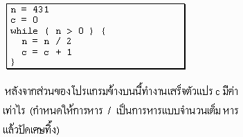
- 1 : 8
- 2 : 9
- 3 : 10
- 4 : 11
- 5 : ไม่มีข้อใดถูก
- คำตอบที่ถูกต้อง : 2
ข้อที่ 330 :
- ข้อ ใดผิดสำหรับส่วนโปรแกรมที่ต้องการวนรับตัวอักษรไปเรื่อย ๆ จนกว่าจะกด q โดยที่มีการประกาศตัวแปรให้ใช้ดังนี้ char check=w;
- 1 : while(check!=q) { printf(Enter one char : ); check=getch( ); }
- 2 : while(check!=113) { printf(Enter one char : ); check=getch( ); }
- 3 : do { printf(Enter one char : ); check=getch( ); } while(check!=q);
- 4 : for(i=0;check!=q;i++) { check=getche(); }
- คำตอบที่ถูกต้อง : 1
ข้อที่ 331 :
- จากส่วนของโปรแกรมดังต่อไปนี้ ผลลัพธ์ i และ j จะเป็นจะมีค่าเท่าใดเมื่อสิ้นสุดการทำวนรอบ j =0; for (i =0; i < 10 ; i = i+2) j = j+5;
- 1 : i = 10 j = 50
- 2 : i = 10 j = 25
- 3 : i = 12 j = 50
- 4 : i = 12 j = 25
- 5 : ไม่มีข้อถูกต้อง
- คำตอบที่ถูกต้อง : 2
ข้อที่ 332 :
- จากส่วนของโปรแกรมดังต่อไปนี้ ผลลัพธ์ i และ j จะเป็นจะมีค่าเท่าใดเมื่อสิ้นสุดการทำวนรอบ j =2; for (i =0; i < 10 ; i = i+2) j = j*2;
- 1 : i = 10 j =32
- 2 : i = 10 j = 64
- 3 : i = 12 j = 32
- 4 : i = 12 j =64
- 5 : ไม่มีข้อถูก
- คำตอบที่ถูกต้อง : 2
ข้อที่ 333 :
- จาก ส่วนของโปรแกรมดังต่อไปนี้ ผลลัพธ์ i และ j จะเป็นจะมีค่าเท่าใดเมื่อสิ้นสุดการทำวนรอบ j =0; for (i =1; i < 10 ; i = i*2) j = j+2;
- 1 : i = 10 j = 10
- 2 : i = 10 j = 8
- 3 : i = 16 j = 10
- 4 : i = 16 j = 8
- 5 :
- คำตอบที่ถูกต้อง : 4
ข้อที่ 334 :
- จากส่วนของโปรแกรมดังต่อไปนี้ ผลลัพธ์ i และ j จะเป็นจะมีค่าเท่าใดเมื่อสิ้นสุดการทำวนรอบ j =1; for (i =1; i < 10 ; i = i*2) j = j*2;
- 1 : i = 8 j = 8
- 2 : i = 16 j = 8
- 3 : i = 16 j = 32
- 4 : i = 8 j = 16
- 5 : i = 16 j = 16
- คำตอบที่ถูกต้อง : 5
ข้อที่ 335 :
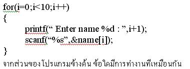
- 1 :
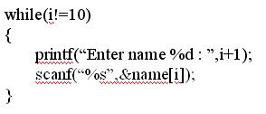
- 2 :
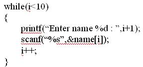
- 3 :
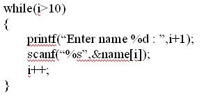
- 4 :
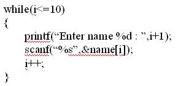
- 5 :
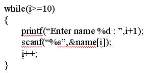
- คำตอบที่ถูกต้อง : 2
ข้อที่ 336 :
- จากส่วนของโปรแกรมดังต่อไปนี้ ผลลัพธ์ i และ j จะเป็นจะมีค่าเท่าใดเมื่อสิ้นสุดการทำวนรอบ j =0; for (i =1; i < 10 ; i = i*3) j = j+2;
- 1 : i = 12 j = 8
- 2 : i = 27 j = 8
- 3 : i = 12 j =6
- 4 : i =27 j =6
- 5 : i =27 j=10
- คำตอบที่ถูกต้อง : 4
ข้อที่ 337 :
- จากส่วนของโปรแกรม ดังต่อไปนี้ จะเกิดการทำงานในวงวน (loop) กี่ครั้ง j = 10; do { j = j-1; } while (j >0);
- 1 : 7
- 2 : 8
- 3 : 9
- 4 : 10
- 5 : 11
- คำตอบที่ถูกต้อง : 4
ข้อที่ 338 :
- จากส่วนของโปรแกรม ดังต่อไปนี้ จะเกิดการทำงานในวงวน (loop) กี่ครั้ง j =10; do { j = j-2; } while (j >0);
- 1 : 3
- 2 : 5
- 3 : 7
- 4 : 9
- 5 : 10
- คำตอบที่ถูกต้อง : 2
ข้อที่ 339 :
- จากส่วนของโปรแกรม ดังต่อไปนี้ จะเกิดการทำงานในวงวน (loop) กี่ครั้ง j = 10; do { j = j/2; } while (j >0);
- 1 : 4
- 2 : 5
- 3 : 6
- 4 : 7
- 5 : 8
- คำตอบที่ถูกต้อง : 1
ข้อที่ 340 :
- จากส่วนของโปรแกรม ดังต่อไปนี้ จะเกิดการทำงานในวงวน (loop) กี่ครั้ง j = 10; while (j >=0) { j = j -1; }
- 1 : 8
- 2 : 9
- 3 : 10
- 4 : 11
- 5 : 12
- คำตอบที่ถูกต้อง : 4
ข้อที่ 341 :
- จากส่วนของโปรแกรม ดังต่อไปนี้ จะเกิดการทำงานในวงวน (loop) กี่ครั้ง j = 10; while (j >=0) { j = j -2; }
- 1 : 4
- 2 : 5
- 3 : 6
- 4 : 7
- 5 : 8
- คำตอบที่ถูกต้อง : 3
ข้อที่ 342 :
- จากส่วนของโปรแกรม ดังต่อไปนี้ จะเกิดการทำงานในวงวน (loop) กี่ครั้ง j = 10; while (j >=0) { j = j - 3 ; }
- 1 : 3
- 2 : 4
- 3 : 5
- 4 : 6
- 5 : 7
- คำตอบที่ถูกต้อง : 2
ข้อที่ 343 :
- จากส่วนของโปรแกรม ดังต่อไปนี้ จะเกิดแสดงข้อความ "Test" กี่ครั้ง for (i =0 ; i < 10 ; i++) { printf ("Test\n"); }
- 1 : 9
- 2 : 10
- 3 : 11
- 4 : 12
- 5 : ไม่มีข้อถูก
- คำตอบที่ถูกต้อง : 2
ข้อที่ 344 :
- จากส่วนของโปรแกรม ดังต่อไปนี้ จะแสดงข้อความ "Test" กี่ครั้ง for (i =0 ;i<= 10 ; i++) { printf ("Test\n"); }
- 1 : 9
- 2 : 10
- 3 : 11
- 4 : 12
- 5 : ไม่มีข้อถูก
- คำตอบที่ถูกต้อง : 3
ข้อที่ 345 :
- จากส่วนของโปรแกรม ดังต่อไปนี้ จะแสดงข้อความ "Test" กี่ครั้ง for (i = 1 ;i< 10 ; i++) { printf ("Test\n"); }
- 1 : 8
- 2 : 9
- 3 : 10
- 4 : 11
- 5 : ไม่มีข้อถูก
- คำตอบที่ถูกต้อง : 2
ข้อที่ 346 :
- จากส่วนของโปรแกรม ดังต่อไปนี้ จะแสดงข้อความ "Test" กี่ครั้ง for (i =1 ;i<= 10 ; i++) { printf ("Test\n"); }
- 1 : 8
- 2 : 9
- 3 : 10
- 4 : 11
- 5 : ไม่มีข้อถูก
- คำตอบที่ถูกต้อง : 3
ข้อที่ 347 :
- จากส่วนของโปรแกรม ดังต่อไปนี้ จะแสดงข้อความ "Test" กี่ครั้ง for (i =0 ;i< 10 ; i=i+2) { printf ("Test\n"); }
- 1 : 4
- 2 : 5
- 3 : 6
- 4 : 7
- 5 : 8
- คำตอบที่ถูกต้อง : 2
ข้อที่ 348 :
- จากส่วนของโปรแกรม ดังต่อไปนี้ จะแสดงข้อความ "Test" กี่ครั้ง for (i =1 ;i< 10 ; i=i*2) { printf ("Test\n"); }
- 1 : 2
- 2 : 3
- 3 : 4
- 4 : 5
- 5 : ไม่มีข้อถูก
- คำตอบที่ถูกต้อง : 3
ข้อที่ 349 :
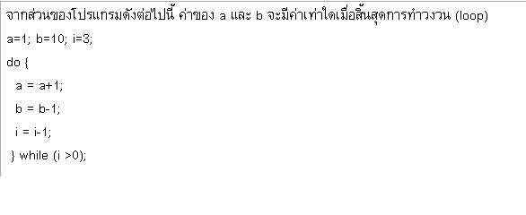
- 1 : a = 4 b = 8
- 2 : a = 4 b = 7
- 3 : a =5 b= 8
- 4 : a =5 b= 7
- 5 : ไม่มีข้อถูก
- คำตอบที่ถูกต้อง : 2
ข้อที่ 350 :
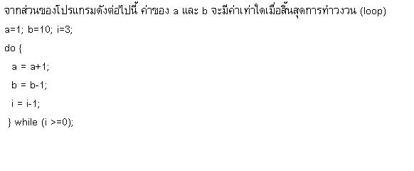
- 1 : a = 5 b =6
- 2 : a = 5 b =7
- 3 : a = 4 b = 6
- 4 : a = 4 b =7
- 5 : ไม่มีข้อถูก
- คำตอบที่ถูกต้อง : 1
ข้อที่ 351 :
- ในการเขียนโปรแกรมเพื่อใช้ในการคูณ matrix ขนาด m x n จำนวน 2 matrix จะต้องใช้การวนลูปกี่ชั้นในการแก้ปัญหานี้
- 1 : 4 ชั้น
- 2 : 2 ชั้น
- 3 : 1 ชั้น
- 4 : 3 ชั้น
- คำตอบที่ถูกต้อง : 4
ข้อที่ 352 :
- ใน การเขียนโปรแกรมเพื่อใช้ในการหาค่าน้อยที่สุดของเลขจำนวนเต็ม ถ้ามีเลขจำนวนเต็มอยู่ 10 ตัว จะต้องมีการวนลูปลึกกี่ชั้น และเกิดการเปรียบเทียบขึ้นกี่ครั้ง
- 1 : 1 ชั้น และเกิดการเปรียบเทียบ 10 ครั้ง
- 2 : 1 ชั้น และเกิดการเปรียบเทียบ 9 ครั้ง
- 3 : 2 ชั้น และเกิดการเปรียบเทียบ 36 ครั้ง
- 4 : 2 ชั้น และเกิดการเปรียบเทียบ 45 ครั้ง
- คำตอบที่ถูกต้อง : 2
ข้อที่ 353 :
- ถ้า ส่วน for(x = 2; x <20; x+=3) อยู่ในโปรแกรมที่แสดงค่า x ทุกค่าจนจบโปรแกรม ค่าของ x ในข้อใดไม่ถูกต้อง
- 1 : 8
- 2 : 14
- 3 : 17
- 4 : 18
- คำตอบที่ถูกต้อง : 4
ข้อที่ 354 :
- สัญลักษณ์ดังรูป หมายถึงสัญลักษณ์ในผังงานข้อใด
- 1 : การรับหรือแสดงผลโดยไม่ระบุอุปกรณ์
- 2 : การแสดงผลทางจอภาพ
- 3 : การแสดงผลข้อมูลเป็นเอกสาร เช่นแสดงผลทางเครื่องพิมพ์
- 4 : จุดเริ่มต้น หรือจุดสุดท้ายของกิจกรรม
- คำตอบที่ถูกต้อง : 1
ข้อที่ 355 :
- โปรแกรมที่แสดง x = 2; while(x<=100) x++; ให้ผลลัพธ์อย่างไร
- 1 : โปรแกรมแสดง 1-100
- 2 : โปรแกรมแสดงเลขคู่ตั้งแต่ 2-100
- 3 : โปรแกรมแสดงเลขตั้งแต่ 2-100
- 4 : โปรแกรมแสดงเลขคี่ตั้งแต่ 2-100
- คำตอบที่ถูกต้อง : 3
เนื้อหาวิชา : 7 : Arrays 1-2 มิติ
ข้อที่ 356 :
- กำหนด a[] = {7,3,2,5,6}; ความหมายของ a[3] จะมีค่าเท่าใด
- 1 : 7
- 2 : 3
- 3 : 2
- 4 : 5
- 5 : 6
- คำตอบที่ถูกต้อง : 4
ข้อที่ 357 :
- ข้อใดถูกต้องที่สุด
- 1 : a[0] เป็นสมาชิกของอะเรย์ ตัวแรกสุด
- 2 : a[]= {2,5,3,9} ตัวแปรอะเรย์ ที่มีค่า 5 คือ a[2]
- 3 : a[]= {2,5,3,9}สมาชิกตัวสุดท้ายของอะเรย์คือ a[4]
- 4 : ไม่มีข้อถูก
- คำตอบที่ถูกต้อง : 1
ข้อที่ 358 :
- ข้อความ Hello-World ต้องใช้ตัวแปรอะเรย์ชนิด char จำนวนกี่ตำแหน่ง
- 1 : 9
- 2 : 10
- 3 : 11
- 4 : 12
- คำตอบที่ถูกต้อง : 3
ข้อที่ 359 :
- จาก
Flow chart ที่กำหนดหลังจบโปรแกรมจงหาค่า matrix และหาค่าวนรอบจุด A , B
,C,E จุดละกี่รอบ เมื่อตำแหน่ง Array เริ่มที่ a[1][1] ,b[1][1]
ให้ค่า n= 1,m=2 ,x=1,y=3
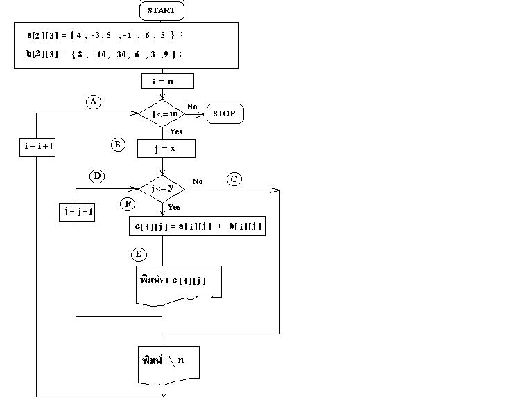
- 1 : C[2][3]={ 12 , -10 ,35 ,5 ,9,14} วนรอบจุด A = 2 รอบ ,จุด B =2 รอบ,จุด C=2 รอบ ,จุด E =6 รอบ
- 2 : C[2][3]={ 12 , -13 ,35 ,5 ,9,13} วนรอบจุด A = 2 รอบ ,จุด B =2 รอบ,จุด C=3 รอบ ,จุด E = 7 รอบ
- 3 : C[2][3]={ 12 , -7 ,35 ,5 ,9,14} วนรอบจุด A = 2 รอบ ,จุด B =2 รอบ,จุด C=2 รอบ ,จุด E =7 รอบ
- 4 : C[2][3]={ 12 , -13 ,35 ,5 ,9,14} วนรอบจุด A = 2 รอบ ,จุด B =2 รอบ,จุด C=2 รอบ ,จุด E =6 รอบ
- คำตอบที่ถูกต้อง : 4
ข้อที่ 360 :
- รหัสเทียม(pseudocode) ต่อไปนี้ตรงกับการทำงานในข้อใด
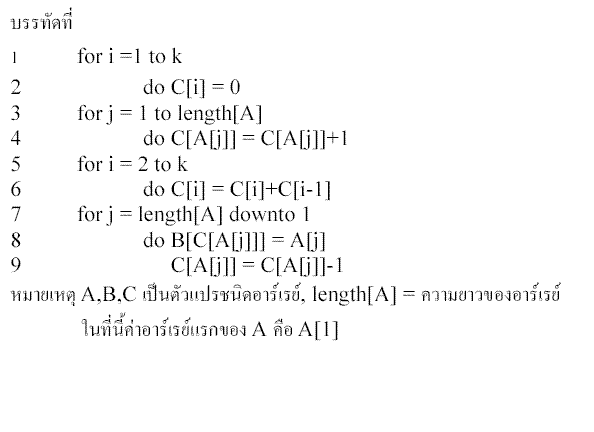
- 1 : การเรียงตัวเลขจากน้อยไปหามาก
- 2 : การเรียงตัวเลขจากมากไปหาน้อย
- 3 : การหาผลรวมตัวเลขในอาร์เรย์ B โดยใช้อาร์เรย์ A และ C ช่วย
- 4 : การหาผลรวมตัวเลขในอาร์เรย์ C โดยใช้อาร์เรย์ A และ B ช่วย
- คำตอบที่ถูกต้อง : 1
ข้อที่ 361 :
- จากรหัสเทียม(pseudocode)ที่กำหนดให้ หากมีการเปลี่ยนบรรทัดที่ 7 เป็น for j = 1 to length[A] จะเกิดผลตรงกับข้อใด
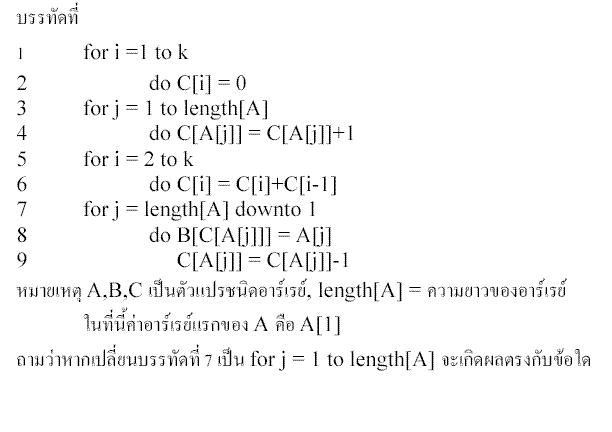
- 1 : การหาผลรวมตัวเลขในอาร์เรย์ C โดยใช้อาร์เรย์ A และ B ช่วย
- 2 : การหาผลรวมตัวเลขในอาร์เรย์ B โดยใช้อาร์เรย์ A และ C ช่วย
- 3 : การเรียงตัวเลขจากมากไปหาน้อย
- 4 : การเรียงตัวเลขจากน้อยไปหามาก
- คำตอบที่ถูกต้อง : 4
ข้อที่ 362 :
- กำหนดรหัสเทียม(pseudocode)ของฟังก์ชัน X ต่อไปนี้
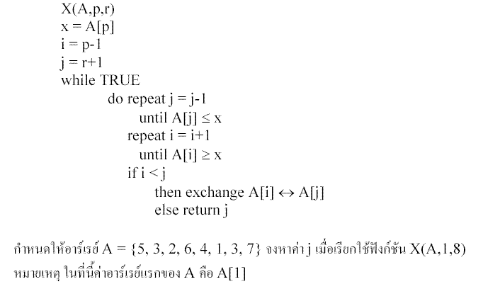
- 1 : 1
- 2 : 3
- 3 : 5
- 4 : 7
- คำตอบที่ถูกต้อง : 3
ข้อที่ 363 :
- กำหนดรหัสเทียม(pseudocode) ของฟังก์ชัน X ต่อไปนี้
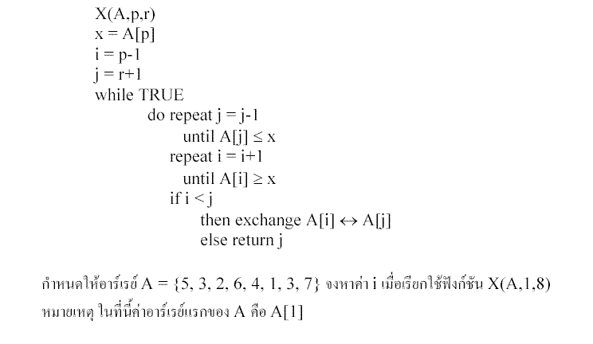
- 1 : 2
- 2 : 4
- 3 : 6
- 4 : 8
- คำตอบที่ถูกต้อง : 3
ข้อที่ 364 :
- กำหนดรหัสเทียม(pseudocode) ของฟังก์ชัน X ต่อไปนี้
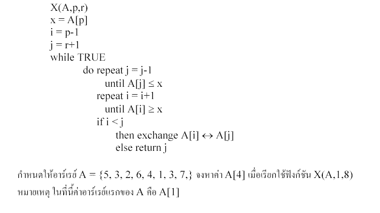
- 1 : 1
- 2 : 2
- 3 : 3
- 4 : 4
- คำตอบที่ถูกต้อง : 1
ข้อที่ 365 :
- กำหนดรหัสเทียม(pseudocode) ของโปรแกรม Y ซึ่งมีการเรียกใช้งานฟังก์ชัน X ดังต่อไปนี้
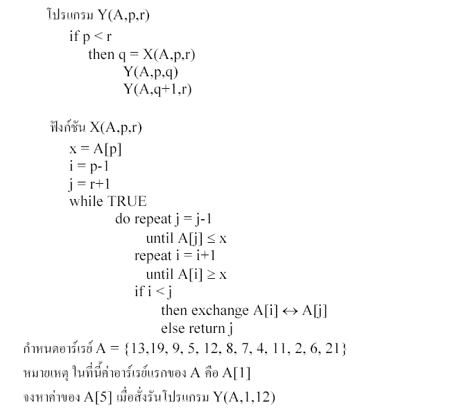
- 1 : 12
- 2 : 8
- 3 : 7
- 4 : 4
- คำตอบที่ถูกต้อง : 3
ข้อที่ 366 :
- กำหนดรหัสเทียม(pseudocode) โปรแกรม Y ซึ่งมีการเรียกใช้งานฟังก์ชัน X ดังต่อไปนี้
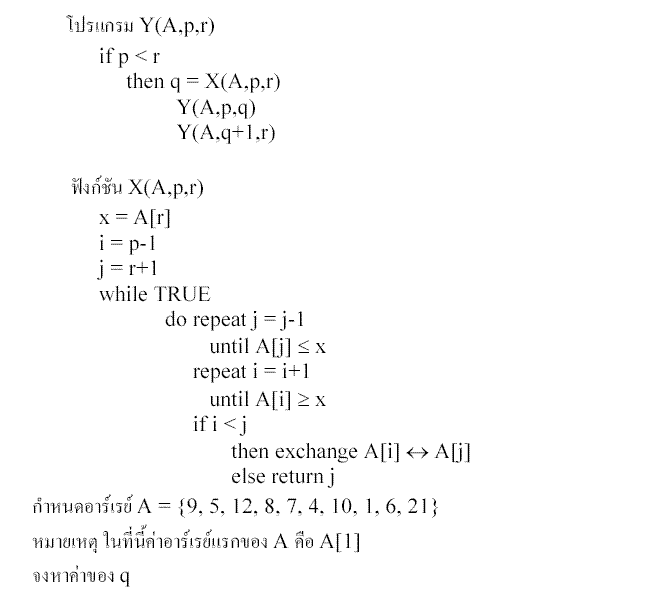
- 1 : 1
- 2 : 10
- 3 : 9
- 4 : 21
- คำตอบที่ถูกต้อง : 2
ข้อที่ 367 :
- คำสั่งใดมักนิยมใช้ในการนำข้อมูลเข้าไปเก็บและแสดงผลข้อมูลในตัวแปรชุด
- 1 : loop
- 2 : while
- 3 : do-while
- 4 : for
- 5 : do-until
- คำตอบที่ถูกต้อง : 4
ข้อที่ 368 :
- จากคำสั่งต่อไปนี้เมื่อทำจนจบคำสั่ง ข้อความที่เก็บในC[ ] คืออะไร
str[ ] = Hello World;
i = 0;
for (k=10; k>=0; k--){
C[k] = str[i];
i = i + 1;
}
- 1 : Hello World
- 2 : World
- 3 : dlroW olleH
- 4 : dlroW
- คำตอบที่ถูกต้อง : 3
ข้อที่ 369 :
- ้จาก algorithm ด้านล่างนี้ จงหา ค่าของตัวแปร what ที่พิมพ์ออกมา
----------------------------------------------------------------------
score = {1, 4, 8, 5, 6, 2}
what = score[0]
FOR (index=0; index < 6; index=index+1) {
if ( score[index] > what ) {
what = score[index];
}
}
print(what)
- 1 : 1
- 2 : 8
- 3 : 6
- 4 : 2
- คำตอบที่ถูกต้อง : 2
ข้อที่ 370 :
- ค่าที่เก็บในตัวแปรชุด a[ ][ ] หลังจากการทำงานของโปรแกรมคือข้อใด
int a[3][4];
int i,j;
for(i=0; i<3; i++)
for(j=0; j<4; j++)
a[i][j] = i*j;
- 1 : 0 0 0 0
0 0 0 0
0 1 2 3 - 2 : 0 0 0 0
0 1 2 3
0 2 3 6 - 3 : 0 0 0 0
0 1 2 3
0 1 4 6 - 4 : 0 0 0 0
0 1 2 3
0 2 4 6 - คำตอบที่ถูกต้อง : 4
ข้อที่ 371 :
- กำหนดให้ int data[6][5][4];
ถ้าต้องการให้ตัวแปรตัวที่ 20 เก็บค่า 100 เราต้องใช้คำสั่งอย่างไร?
- 1 : data[0][4][3] = 100;
- 2 : data[1][4][3] = 100;
- 3 : data[1][3][3] = 100;
- 4 : data[0][3][3] = 100;
- คำตอบที่ถูกต้อง : 1
ข้อที่ 372 :
- ถ้า y = { 1, 9, 2, 6, 7 };
y[3] จะมีค่าเท่าไร
- 1 : 1
- 2 : 9
- 3 : 2
- 4 : 6
- คำตอบที่ถูกต้อง : 4
ข้อที่ 373 :
- ถ้า y[3][3] = {{7, 4, 5}, {6, 1, 8}, {2, 3, 4}};
y[2][1] มีค่าเท่าไร
- 1 : 1
- 2 : 3
- 3 : 4
- 4 : 6
- คำตอบที่ถูกต้อง : 2
ข้อที่ 374 :
- int function_x(int x[] int len)
{
int temp = x[0];
for(int i=1; i
- 1 : เรียงค่าน้อยไปหาค่ามาก
- 2 : เรียงค่ามากไปหาค่าน้อย
- 3 : ค้นหาค่าที่น้อยที่สุด
- 4 : ค้นหาค่าที่มากที่สุด
- คำตอบที่ถูกต้อง : 4
ข้อที่ 375 :
- จากโปรแกรมด้านล่าง ค่าของ x[7] และ d[7] จะมีค่าเท่าใด int x[8] = 0; int d[8] = 0; int k; for(k=1;k<8;k++) { x[k] = (2*k-1); d[k] = d[k-1] + x[k]; }
- 1 : 9, 25
- 2 : 11, 36
- 3 : 13, 49
- 4 : 15, 64
- คำตอบที่ถูกต้อง : 4
ข้อที่ 376 :
- กำหนดให้ตัวแปร x และ y เป็นแถวลำดับ (array) ที่มี 1 มิติและมีค่าดังนี้
x[n] = y[n]
โดยที่ n เป็นเลขจำนวนเต็ม ถ้า n มีค่า 3 และ y[3] มีค่า 4 แล้ว x[3] จะมีค่าเท่าใด
- 1 : 1
- 2 : 2
- 3 : 3
- 4 : 4
- คำตอบที่ถูกต้อง : 4
ข้อที่ 377 :
- ถ้ามีการประกาศตัวแปรอาร์เรย์ของ float โดย float y[10][10]; อาร์เรย์ y มีขนาดเป็นกี่ byte (กำหนดให้ float มีขนาดเท่ากับ 4 byte)
- 1 : 200
- 2 : 242
- 3 : 400
- 4 : 484
- คำตอบที่ถูกต้อง : 4
ข้อที่ 378 :
- กำหนดให้โปรแกรมมีขั้นตอนการทำงานดังนี้
เริ่มต้นโปรแกรม
รับค่า i
ทำซ้ำ โดยให้ count = 1 ถึง i
x[i] = i + 1
จบทำซ้ำ
จบโปรแกรม
ถ้าคอมพิวเตอร์ทำโปรแกรมนี้จนจบ โดยผู้ใช้ใส่ค่า 7 แล้วข้อใดเป็นจริง
- 1 : x[2] มีค่า 3
- 2 : x[3] มีค่า 3
- 3 : x[7] มีค่า 6
- 4 : x[7] มีค่า 7
- คำตอบที่ถูกต้อง : 1
ข้อที่ 379 :
- กำหนดให้โปรแกรมมีขั้นตอนการทำงานดังนี้
เริ่มต้นโปรแกรม
i = 8 ;
x[1] = 1 ; x[2] = 1 ;
ทำซ้ำโดยให้ count = 3 ถึง i
x[i] = x[i 1] + x[i - 2]
จบทำซ้ำ
จบโปรแกรม
ถ้าคอมพิวเตอร์ทำโปรแกรมนี้จนจบ แล้วทำให้ข้อใดเป็นจริง
- 1 : x[2] มีค่า 3
- 2 : x[3] มีค่า 3
- 3 : x[4] มีค่า 3
- 4 : x[5] มีค่า 3
- คำตอบที่ถูกต้อง : 3
ข้อที่ 380 :
- จาก char fruit [5] [20] = {apple, banana, cherry, orange, strawberry}; ข้อใดคือค่าของ fruit [3] [0]
- 1 : a
- 2 : c
- 3 : b
- 4 : o
- คำตอบที่ถูกต้อง : 4
ข้อที่ 381 :
- ถ้า int num[5] = {8,12,20,5,40}; ข้อใดเป็นคำตอบของ y เมื่อ int y = num[1]*num[3]num[4];
- 1 : num[0]
- 2 : num[1]
- 3 : num[2]
- 4 : num[3]
- คำตอบที่ถูกต้อง : 3
ข้อที่ 382 :
- จาก pseudocode:
a: array of 2*10;
b: array of 5*2;
for a_x=1 to 2
b(a_x,a_x)=a_x;
for a_y=1 to 10;
a(a_x,a_y)=a_x*a_y;
end
end
c=a(5,2)+b(2,2);
ผลลัพธ์ของ c คือ
- 1 : 1
- 2 : 2
- 3 : 12
- 4 : 7
- คำตอบที่ถูกต้อง : 3
ข้อที่ 383 :
- ให้ A[1..N] เป็น อะเรย์ หนึ่งมิติ ขนาด N
โปรแกรมต่อไปนี้ทำอะไร
M = A[1]
FOR K =2 TO N
IF M < A[K] THEN M = A[K]
END
- 1 : หาค่า MAX A[1..N]
- 2 : หาค่า MIN A[1..N]
- 3 : หาว่า มีค่าใดน้อยกว่า M หรือไม่
- 4 : หาว่า มีค่าใดมากกว่า M หรือไม่
- คำตอบที่ถูกต้อง : 1
ข้อที่ 384 :
- ให้ A[1..N] เป็น อะเรย์ หนึ่งมิติ ขนาด N
A[1]=1 A[2]=2 ... A[N]=N
เมื่อโปรแกรมจบ A[5] มีค่าเท่าไร
FOR K = 2 TO N
A[K] = A[K-1] + A[K]
END
- 1 : 5
- 2 : 9
- 3 : 11
- 4 : 15
- คำตอบที่ถูกต้อง : 4
ข้อที่ 385 :
- ให้ B[1..N, 1..N] เป็น อะเรย์ 2 มิติ ขนาด N x N
เมื่อโปรแกรมทำงานเสร็จ บรรทัด B[J,K] = B[J,K] + 1 ทำงานไปกี่รอบ
FOR J = 1 TO N
FOR K = 1 TO J
B[J,K] = B[J,K] + 1
END
- 1 : N
- 2 : 2N
- 3 : N x N
- 4 : N(N+1)/2
- 5 : ผิดทุกข้อ
- คำตอบที่ถูกต้อง : 4
ข้อที่ 386 :
- จากโปรแกรม ตัวแปร a รับค่าได้มากที่สุดกี่ค่า
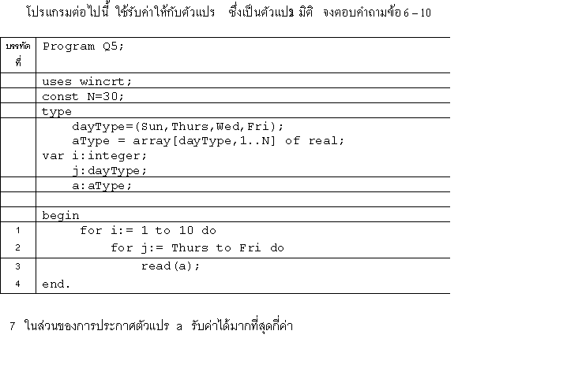
- 1 : 30
- 2 : 60
- 3 : 90
- 4 : 120
- คำตอบที่ถูกต้อง : 4
ข้อที่ 387 :
- กำหนดให้
a = {3,5,7,2};
b = {1,9,9,1};
จงหาค่าของ b[a[3]] + a[b[3]]
- 1 : 10
- 2 : 12
- 3 : 14
- 4 : 16
- คำตอบที่ถูกต้อง : 3
ข้อที่ 388 :
- ต่อไปนี้ข้อใดต้องใช้ตัวแปรเป็นอาเรย์ 2 มิติ
- 1 : เพื่อเก็บคะแนนของนักเรียนวิชาคอมพิวเตอร์ 100 คน
- 2 : เพื่อเก็บคะแนนนักเรียน 5 วิชา
- 3 : เพื่อเก็บปริมาณน้ำฝนแต่ละเดือนในช่วง 10 ปี
- 4 : เพื่อเก็บจำนวนนักเรียนของโรงเรียน 100 โรง
- คำตอบที่ถูกต้อง : 3
ข้อที่ 389 :
- ดูโจทย์จากรูปภาพประกอบคำถาม
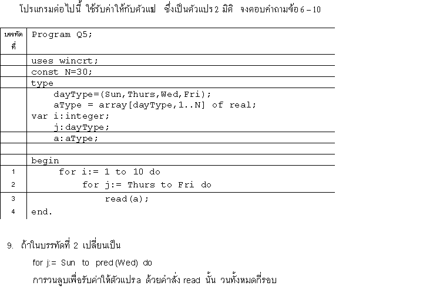
- 1 : 10
- 2 : 20
- 3 : 30
- 4 : 60
- คำตอบที่ถูกต้อง : 2
ข้อที่ 390 :
- ดูโจทย์จากรูปภาพประกอบคำถาม
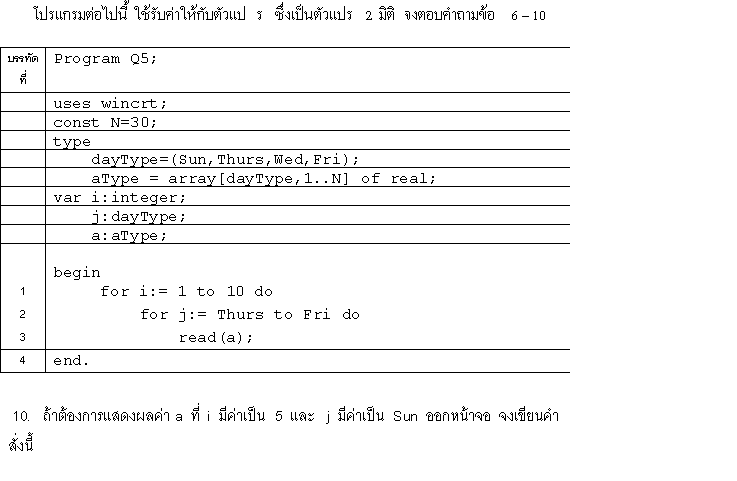
- 1 : read(a[i,j])
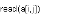
- 2 : read(a[j,i])
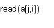
- 3 : write(a[Sun,5])
- 4 : write(a[Thurs,5])
- คำตอบที่ถูกต้อง : 3
ข้อที่ 391 :
- n=6
- 1 : [7,6,5,4,3,2,1]
- 2 : [1,1,1,1,1,1,1]
- 3 : [7,7,7,7,7,7,7]
- 4 : [1,2,3,4,5,6,7]
- คำตอบที่ถูกต้อง : 4
ข้อที่ 392 :
- ถ้าต้องการทำการประกาศตัวแปร A เพื่อเก็บข้อมูลเมตริกซ์ที่มีขนาด 4 X 4 ควรประกาศตัวแปรอย่างไร
- 1 : A : Array [1..4] of Integer ;
- 2 : A : Array [1..4, 1..4 ] of Integer ;
- 3 : A : Array [1..4, 1..4, 1..4, 1..4] of Integer ;
- 4 : ไม่มีข้อใดถูก
- คำตอบที่ถูกต้อง : 2
ข้อที่ 393 :
- ถ้า Array 1 มิติ ชื่อ A มีขนาด 8 ช่องข้อมูล แล้วต้องการเก็บค่า 20 ไว้ในตำแหน่ง(Index)ที่ 5 จะต้องเขียนคำสั่งอย่างไร
- 1 : A[8] := 20;
- 2 : A[5] := 20 ;
- 3 : Readln( A[5] )
- 4 : For i := 1 to 8 Do Readln( A[i] ) ;
- คำตอบที่ถูกต้อง : 2
ข้อที่ 394 :
- Var A : Array [0..10] of integer; B : Array [1..10] of real; C : Array [1..2,-1..3,1..3,0..3] of integer; ถ้าต้องการเขียนคำสั่งในการกำหนดให้ Array B มีค่าเป็น 0 ทั้งหมด จะต้องเขียนคำสั่งอย่างไร
- 1 : B[1..10] := 0;
- 2 : B := 0;
- 3 : For i := 1 to 10 do B[i] := 0;
- 4 : ถูกทุกข้อ
- คำตอบที่ถูกต้อง : 3
ข้อที่ 395 :
- Var A : Array [0..10] of integer; B : Array [1..10] of real; C : Array [1..2,-1..3,1..3,0..3] of integer; ตัวแปร C เป็นตัวแปร Array แบบกี่มิติ (Dimension) และสมาชิก (Element) ทั้งหมดกี่จำนวน
- 1 : 4 มิติ , 54 จำนวน
- 2 : 4 มิติ , 96 จำนวน
- 3 : 4 มิติ , 120 จำนวน
- 4 : 2x2 มิติ , 96 จำนวน
- คำตอบที่ถูกต้อง : 3
ข้อที่ 396 :
- จากโจทย์ต่อไปนี้ For i := 1 to 5 Do For j := 1 to 3 Do Readln (X[i,j]) ; มีการรับข้อมูลเข้าไปไว้ในตัวแปร X กี่จำนวน ?
- 1 : 3
- 2 : 5
- 3 : 8
- 4 : 15
- คำตอบที่ถูกต้อง : 4
ข้อที่ 397 :
- ถ้าต้องการนำค่า 16 นำไปเก็บไว้ในตัวแปร Array ชื่อ X ลำดับที่ 5 จะต้องเขียนคำสั่งอย่างไร
- 1 : X : Array[ 5 , 16] of Integer ;
- 2 : X[ 5 ] := 16 ;
- 3 : X[ 16 ] := 5 ;
- 4 : 16 = X[ 5 ] ;
- คำตอบที่ถูกต้อง : 2
ข้อที่ 398 :
- จากโจทย์ต่อไปนี้ B := A[ i,j,k ] ; จงบอกมิติ( Dimension )ของตัวแปร A
- 1 : 1
- 2 : 2
- 3 : 3
- 4 : 4
- คำตอบที่ถูกต้อง : 3
ข้อที่ 399 :
- จากการประกาศ Array ต่อไปนี้ A : Array[A..F,5..7] of Real ; Array A มีเนื้อที่ในการเก็บข้อมูลเลขจำนวนจริงสูงสุดเท่าใด
- 1 : 1จำนวน
- 2 : 9จำนวน
- 3 : 18จำนวน
- 4 : 20จำนวน
- คำตอบที่ถูกต้อง : 3